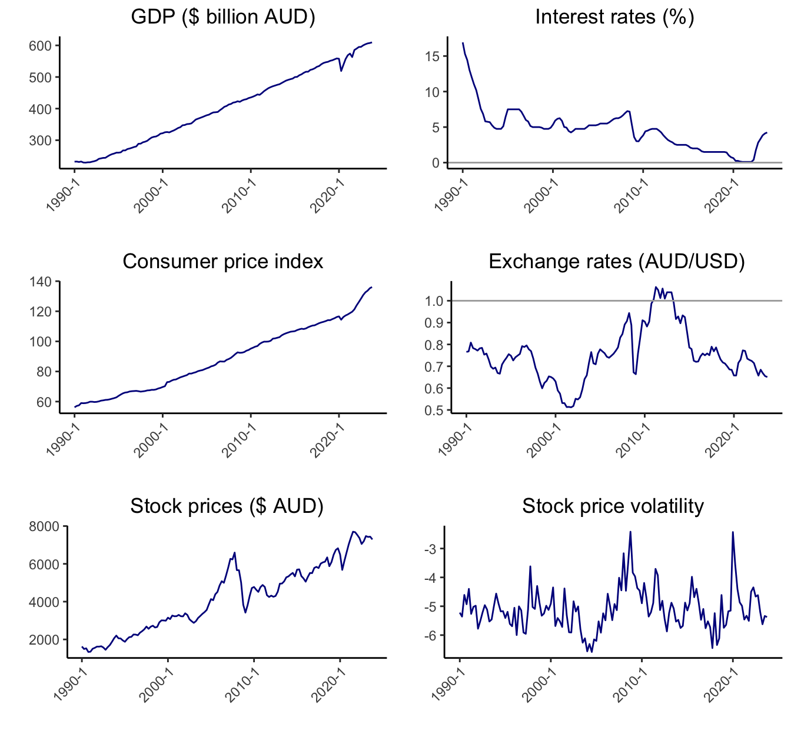
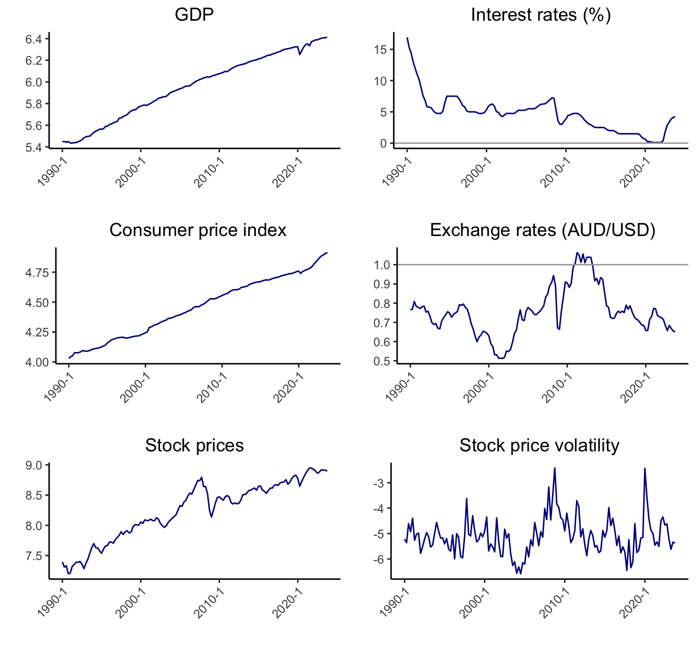
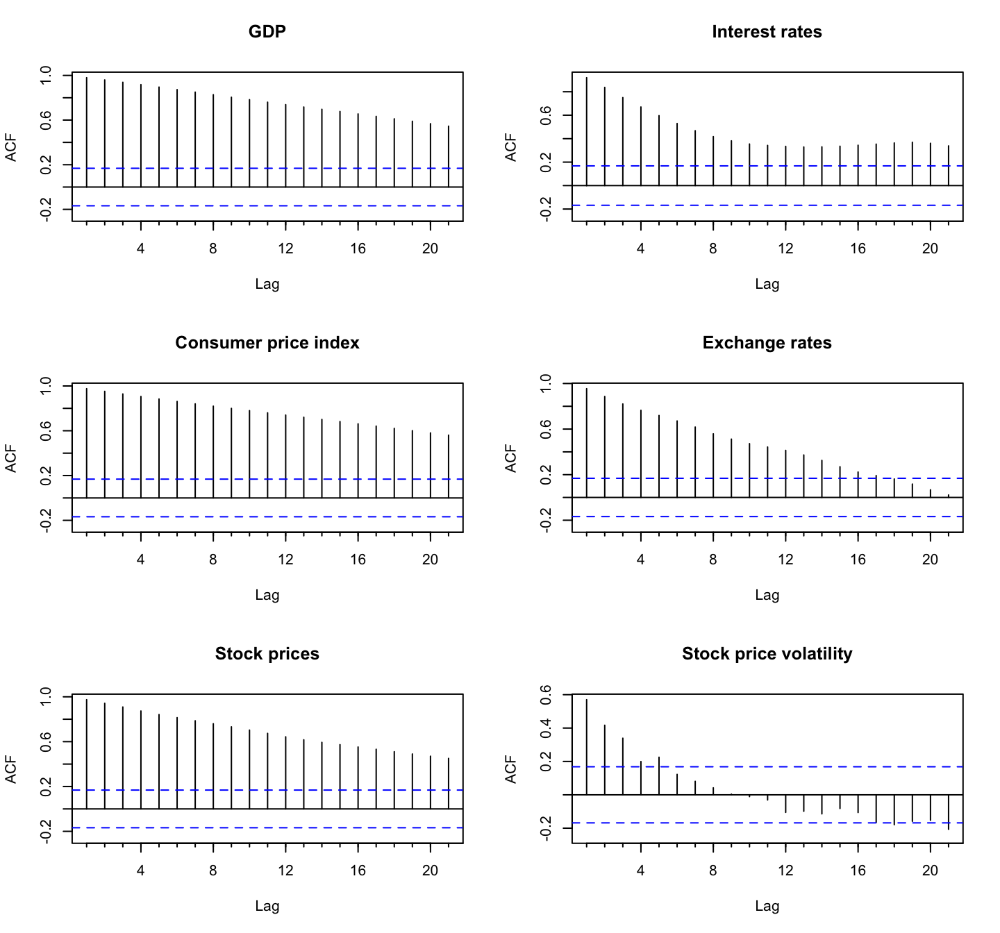
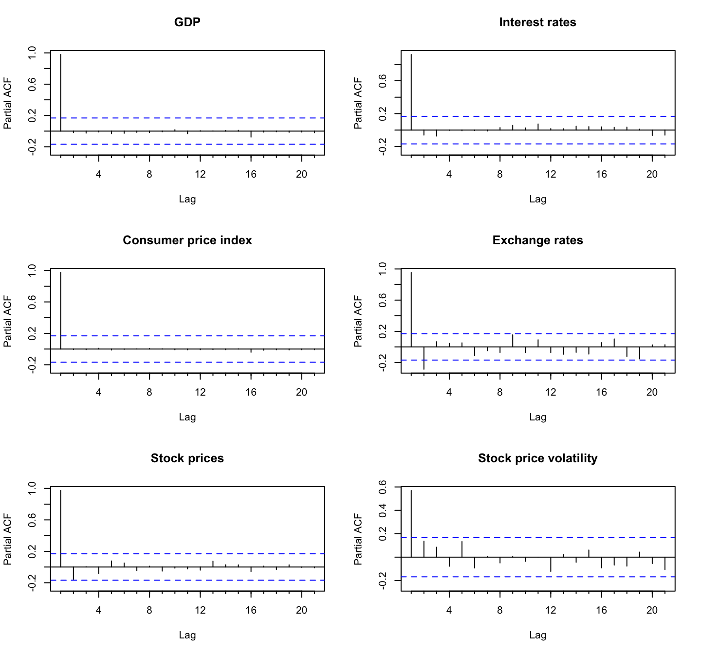
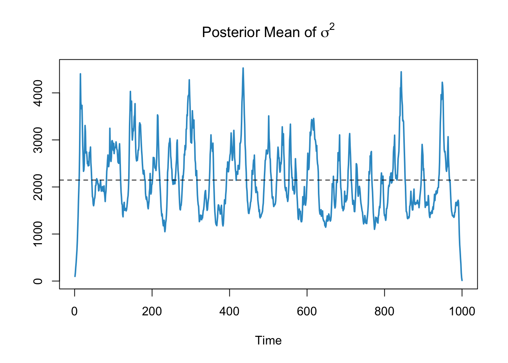
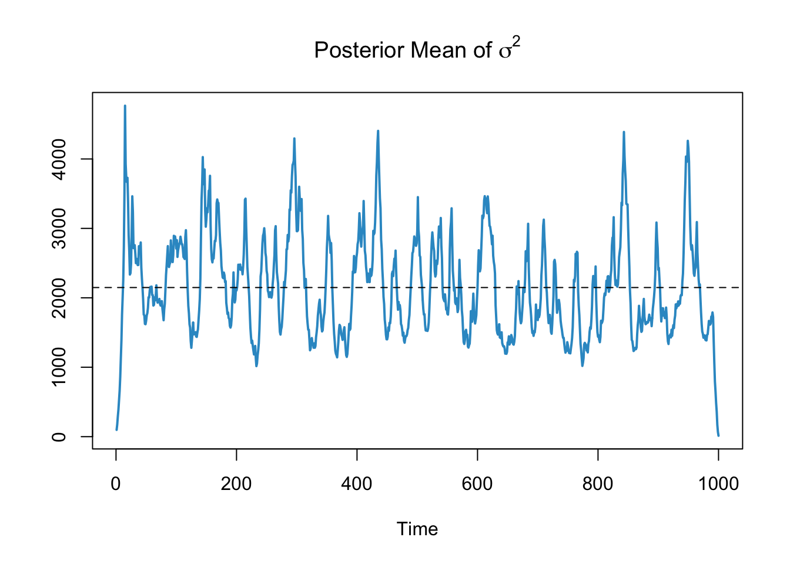
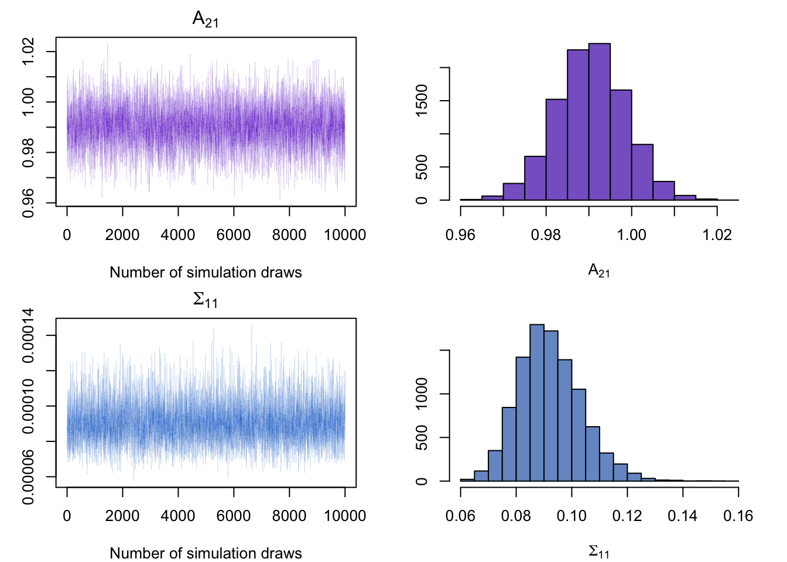
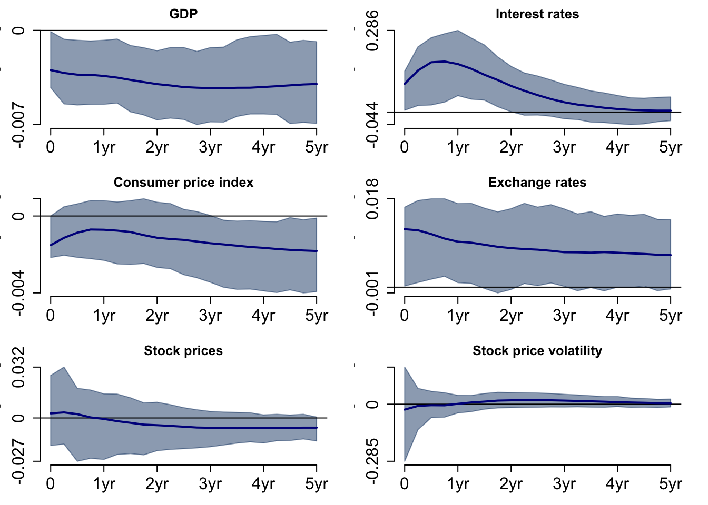
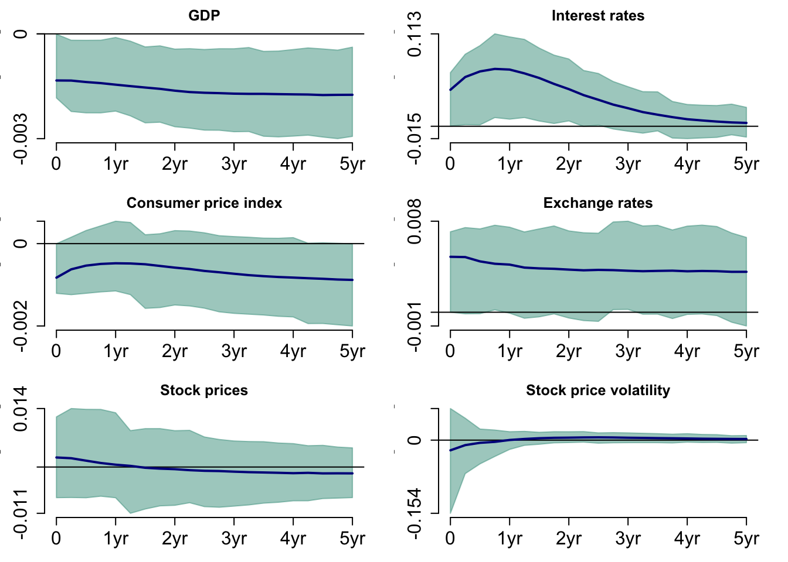
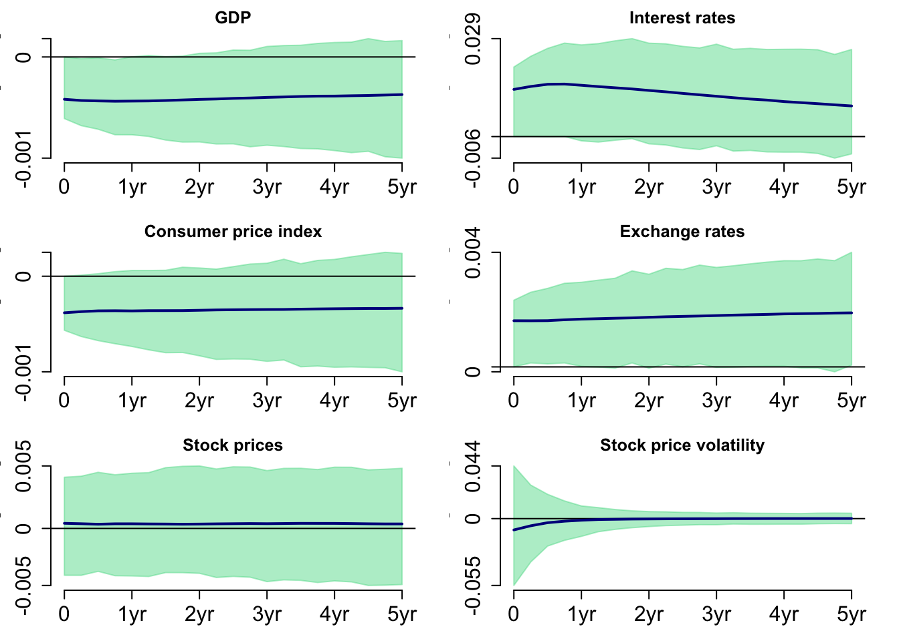

The Effects of Monetary Policy Shocks on Stock Price Volatility: Evidence from the Australian Economy
Abstract. This research project aims to measure the effects of monetary policy shocks on stock price volatility using the Bayesian Structural Vector Autoregressive Model in the Australian economy from 1990 to 2023.
Keywords. Bayesian Structural VARs, Monetary policy shocks, Stock price volatility, Impulse response function
1. Introduction
This research project aims to measure the effects of monetary policy shocks on stock price volatility using a Bayesian Structural Vector Autoregressive Model in the Australian economy from 1990 to 2023. The question addressed in this study is: How does an increase in the cash rate target affect stock price volatility in the Australian market?
The behaviour and decisions of stakeholders–including investors, businesses, and financial institutions–in financial markets are primarily affected by stock price volatility. As such, the effect of change in stock prices plays a large role in the Australian economy. This study aims to measure the effects of monetary policy shocks on stock price volatility using the Bayesian Structural Vector Autoregression model, focusing on the Australian economy.
2. Data
The study includes data from the Reserve Bank of Australia (RBA), the Australian Bureau of Statistics (ABS), and Yahoo Finance from 1990 to 2023, adjusted quarterly from 1990 Q1 to 2023 Q4, including 136 observations. The variables selected for our analysis include:
GDP (GDP): real GDP, expressed as per billion AUD
Interest rates (ICR): cash rate target, expressed as a percentage
Consumer price index (CPI): All groups Consumer Price Index, expressed as an index number
Exchange rates (EXR): exchange rates from AUD to USD, expressed in USD
Stock prices (STP): stock prices using the adjusted closing price of the All Ordinaries Index, expressed in AUD
Stock price volatility (VOL): the log of bipower variation calculated using the log of the sum of the
multiplication of consecutive absolute logarithmic returns of stock prices (STP) multiplied by normalisation
factor \(\frac{\pi}{2}\) where \(log[log(\frac{\pi}{2} \sum_{t=2}^{T} |r_{t}| \cdot |r_{t-1}|)]\)
Interest rates (ICR): cash rate target, expressed as a percentage
Consumer price index (CPI): All groups Consumer Price Index, expressed as an index number
Exchange rates (EXR): exchange rates from AUD to USD, expressed in USD
Stock prices (STP): stock prices using the adjusted closing price of the All Ordinaries Index, expressed in AUD
Stock price volatility (VOL): the log of bipower variation calculated using the log of the sum of the
multiplication of consecutive absolute logarithmic returns of stock prices (STP) multiplied by normalisation
factor \(\frac{\pi}{2}\) where \(log[log(\frac{\pi}{2} \sum_{t=2}^{T} |r_{t}| \cdot |r_{t-1}|)]\)
Table 1 shows the data sources.
| Variable | Code | Data source |
|---|---|---|
| GDP | GGDPCVGDP | RBA |
| Interest rates | FIRMMCRTD | RBA |
| Consumer Price Index | A2325846C | ABS |
| Exchange rates | FXRUSD | RBA |
| Stock prices | ^AORD | Yahoo Finance |
GDP, interest rates, consumer price index, exchange rates, stock prices and stock price volatility are plotted in Figure 1. GDP exhibits an upward trend except for a trough during COVID-19. Interest rates depict a gradual downward trend; however, from 2022 Q4, there has been a significant increase in interest rates. There is an overall upward trend of stock prices, however, with the exception of the Global Financial Crisis, where the stock prices have shown great volatility by increasing and decreasing in large amounts.
Table 2 demonstrates the descriptive statistics of the variables from 1990 Q1 to 2023 Q4.
| Variable | Unit | Mean | SD | Min | Max | n |
|---|---|---|---|---|---|---|
| GDP | $ billion AUD | 403.360 | 115.589 | 229.170 | 609.521 | 136 |
| Interest rates | Percentage | 4.620 | 2.922 | 0.100 | 16.923 | 136 |
| Consumer price index | Index | 88.772 | 21.859 | 56.200 | 136.100 | 136 |
| Exchange rates | $ USD | 0.754 | 0.122 | 0.512 | 1.063 | 136 |
| Stock prices | $ AUD | 4224.289 | 1809.808 | 1336.632 | 7701.124 | 136 |
| Stock price volatility | -5.093 | 0.724 | -6.584 | -2.418 | 136 |
In our model, GDP, consumer price index, and stock prices are transformed into a logarithmic scale.
Figure 2 shows the variables… stock price volatility is log of log stock price..

2.1 Diagnostic Tests
2.1.1 Autocorrelation/Partial autocorrelation Function Plots
The autocorrelation test is used to identify the presence of serial correlation between a variable’s current value and its lagged value, indicating that past values influence the current value.
The autocorrelation function (ACF) plots in Figure 3 shows that all the variables except for stock price volatility have non-zero autocorrelation for at least 20 lags, implying that only stock price volatility is a stationary series and the other variables are highly persistent.

The partial autocorrelation function (PACF) plots in Figure 4 shows that the partial autocorrelation for all the variables are significant at the first lag. The partial autocorrelation for exchange rates is also significant at 2.

2.1.2 Unit Root Test
Augmented Dickey-Fuller Test
The augmented Dickey-Fuller test of the null hypothesis of unit root nonstationarity was performed to test the presence of the unit root.
Table 3 shows that the null hypothesis was not rejected at the 1% significance level for all the variables except for stock price volatility, implying that all the variables except for stock price volatility are nonstationary series. Stock price volatility is the log of bipower variation and took logarithmic scale twice.
| Variable | Test statistic | Critical value | Stationarity |
|---|---|---|---|
| GDP | -1.284 | -3.99 | No |
| Interest rates | -2.991 | -3.46 | No |
| Consumer price index | -2.845 | -3.99 | No |
| Exchange rates | -2.181 | -3.46 | No |
| Stock prices | -3.186 | -3.99 | No |
| Stock price volatility | -4.543 | -3.46 | Yes |
Table 4 shows that the Augmented Dickey-Fuller test results on the first difference of the variables. We find that all the variables are unit root stationary at the 1% significance level, and conclude that all the variables except for stock price volatility are integrated of order one, \(I(1)\). Stock price volatility is stationary series and integrated of order zero, \(I(0)\).
| Variable | Test statistic | Critical value | Stationarity |
|---|---|---|---|
| GDP | -5.225 | -3.46 | Yes |
| Interest rates | -5.574 | -2.58 | Yes |
| Consumer price index | -6.089 | -3.46 | Yes |
| Exchange rates | -7.589 | -2.58 | Yes |
| Stock prices | -6.905 | -3.46 | Yes |
| Stock price volatility | -8.322 | -2.58 | Yes |
3. Methodology
3.1 Model Specification
This study uses a Bayesian Structural vector autoregression model to measure the dynamic and contemporaneous relationships between variables. The endogenous variables in the model are the following: \[ Y_t= \begin{bmatrix} gdp_t \\ICR_t \\cpi_t \\EXR_t \\stp_t \\vol_t \end{bmatrix} \] \(Y_t\) contains six variables ordered as
(1) Real GDP, \(gdp_t\),
(2) Interest rates, \(ICR_t\),
(3) Consumer price index, \(cpi_t\),
(4) Exchange rates from AUD to USD, \(EXR_t\),
(5) Stock prices, \(stp_t\), and
(6) Stock price volatility, \(vol_t\).
(2) Interest rates, \(ICR_t\),
(3) Consumer price index, \(cpi_t\),
(4) Exchange rates from AUD to USD, \(EXR_t\),
(5) Stock prices, \(stp_t\), and
(6) Stock price volatility, \(vol_t\).
Structural Form
The Structural form model can be represented as follows: \[ \begin{gather} B_0y_t = b_0 + \sum_{i=1}^{p} B_iy_{t-i} + u_t \\ u_t|Y_{t-1} \sim _{iid} \mathcal{N}(0_N, I_N) \end{gather} \] where
\(y_t\) is an \(N \times 1\) vector of endogenous variables at time \(t\),
\(B_0\) is an \(N \times N\) structural matrix that captures contemporaneous relationships between variables,
\(u_t\) is an \(N \times 1\) vector conditionally on \(Y_{t-1}\) orthogonal or independent structural shocks,
\(N\) is the number of endogeneous variables, and \(p\) is the lag order.
\(B_0\) is an \(N \times N\) structural matrix that captures contemporaneous relationships between variables,
\(u_t\) is an \(N \times 1\) vector conditionally on \(Y_{t-1}\) orthogonal or independent structural shocks,
\(N\) is the number of endogeneous variables, and \(p\) is the lag order.
To obtain a model in a form that uses the autoregressive parameters of the VAR model, we can premultiply the SVAR equation by \(B_0^{-1}\) and get: \[
\begin{align}
y_t &= B_0^{-1}b_0 + \sum_{i=1}^{p}B_0^{-1}B_{i}y_{t-i} + B_0^{-1}u_t
\end{align}
\] It can be rewritten as follows: \[
\begin{align}
y_t &= \mu_0 + \sum_{i=1}^{p}A_iy_{t-i} + Bu_t \\
\\ &u_t|Y_{t-1} \sim _{iid} \mathcal{N}(0_N, I_N)
\end{align}
\] where
\(B = B_0^{-1}\) is a contemporaneous effect matrix that captures contemporaneous effects of shocks on variables \(y_t\),
\(A_i = B_0^{-1}B_i\) is autoregressive slope coefficients, and
\(\mu_0 = B_0^{-1}b_0\) is a constant term.
\(A_i = B_0^{-1}B_i\) is autoregressive slope coefficients, and
\(\mu_0 = B_0^{-1}b_0\) is a constant term.
Reduced Form
Through the equivalence transformations, the Structural form model can be represented as the reduced form model as follows: \[ \begin{gather} y_t = \mu_0 + \sum_{i=1}^{p} A_iy_{t-i} + \epsilon_t \\ \epsilon_t|Y_{t-1} \sim _{iid} \mathcal{N}(0_N, \Sigma) \end{gather} \] where
\(Y_t\) is an \(N \times 1\) vector of endogenous variables at time \(t\),
\(A_i\) is an \(N \times N\) matrix of autoregressive slope parameters,
\(\mu_0\) is an \(N \times 1\) vector of constant terms,
\(\epsilon_t\) is an \(N \times 1\) vector of the multivariate white noise error terms, where \(\epsilon_t = Bu_t\),
\(\Sigma\) is an \(N \times N\) covariance matrix of the error terms \(\epsilon_t\), where \(\Sigma = B_0^{-1} {B_0^{-1}}'\),
\(N\) is the number of endogeneous variables, and \(p\) is the lag order.
\(A_i\) is an \(N \times N\) matrix of autoregressive slope parameters,
\(\mu_0\) is an \(N \times 1\) vector of constant terms,
\(\epsilon_t\) is an \(N \times 1\) vector of the multivariate white noise error terms, where \(\epsilon_t = Bu_t\),
\(\Sigma\) is an \(N \times N\) covariance matrix of the error terms \(\epsilon_t\), where \(\Sigma = B_0^{-1} {B_0^{-1}}'\),
\(N\) is the number of endogeneous variables, and \(p\) is the lag order.
The reduced form can be represented in a matrix form as follows: \[
\begin{gather}
Y = XA + E \\
\\ E|X \sim \mathcal{MN}_{T \times N}(0_{T \times N},\Sigma_{N \times N},I_T)
\end{gather}
\]
\[
\begin{align}
Y = \begin{bmatrix} y_{1}' \\y_{2}' \\. \\. \\. \\y_{T}' \end{bmatrix}_{T \times N} \quad
A = \begin{bmatrix}\mu_{0}' \\A_{1}' \\.\\.\\.\\A_{p}' \end{bmatrix}_{K \times N} \quad
x_t =\begin{bmatrix}\ 1 \\y_{t-1} \\.\\.\\.\\y_{t-p} \end{bmatrix}_{K \times 1} \quad
X = \begin{bmatrix}\ x_{1}' \\x_{2}' \\.\\.\\.\\x_{T}' \end{bmatrix}_{T \times K} \quad
E = \begin{bmatrix}\ \epsilon _{1}' \\\epsilon _{2}' \\.\\.\\.\\\epsilon _{T}' \end{bmatrix}_{T \times N}
\end{align}
\] where
\(Y\) is a \(T \times N\) matrix of endogenous variables at time \(T\),
\(A\) is a \(K \times N\) matrix of autoregressive slope parameters,
\(X\) is a \(T \times N\) matrix of covariates,
\(E\) is a \(T \times N\) matrix of the white noise error terms,
\(\Sigma\) is an \(N \times N\) row-specific covariance matrix of error terms
\(I_T\) is an \(T \times T\) identity matrix representing the column-specific covariance matrix of error,
\(N\) is the number of endogeneous variables,
\(T\) is the number of time periods,
\(p\) is the lag order, and \(K = 1 + pN\).
\(A\) is a \(K \times N\) matrix of autoregressive slope parameters,
\(X\) is a \(T \times N\) matrix of covariates,
\(E\) is a \(T \times N\) matrix of the white noise error terms,
\(\Sigma\) is an \(N \times N\) row-specific covariance matrix of error terms
\(I_T\) is an \(T \times T\) identity matrix representing the column-specific covariance matrix of error,
\(N\) is the number of endogeneous variables,
\(T\) is the number of time periods,
\(p\) is the lag order, and \(K = 1 + pN\).
3.2 Bayes’ theorem
For parameter estimation, the Bayes’ theorem is used to derive the joint posterior distribution.
The joint posterior distribution of \(A\) and \(\Sigma\) can be estimated as follows: \[ \begin{align} \underbrace{p(A,\Sigma|Y,X)}_{\text{Posterior}} &\propto L(A,\Sigma|Y,X) \cdot p(A,\Sigma) \\ &\propto \underbrace{L(A,\Sigma|Y,X)}_{\text{Likelihood function}} \cdot \underbrace{p(A|\Sigma) \cdot p(\Sigma)}_{\text{Prior}} \end{align} \]
3.3 Minnesota Prior
The Minnesota prior is a type of prior distribution that assumes that the variables are assumed to follow a random walk process. It imposes restrictions on the coefficients of the model by shrinking the coefficients on the lag of other variables more aggressively compared to the coefficients of their own lags, reflecting that a variable’s past values are more important predictors of its current value. The impact of past values on future values diminishes as lag p increases.
Using the Minnesota prior, we set the prior mean \(\underline{A}\) as the following: \[ \begin{align} \underline{A} = \begin{bmatrix} \mathbf{0}_{N \times 1} \\ I_N \\ \mathbf{0}_{N \times (p-1)N} \end{bmatrix} \end{align} \] where the prior covariance matrix is \[ \begin{align} Var[vec(A)] &= \Sigma \otimes \underline{V} \end{align} \] Column-specific prior covariance of \(A\) is defined as the following: \[ \begin{align} \underline{V} &= \text{diag}([\kappa_2 \quad \kappa_1 (\mathbf{p}^{-2} \otimes \imath'_N)]) \end{align} \] where \[ \begin{align} \mathbf{p} = [1,2, ..., p] \\ \imath_N = [1,...,1] \end{align} \]
\(\kappa_1\) is overall shrinkage level of autoregressive slopes, and
\(\kappa_2\) is overall shrinkage of the constant term.
\(\kappa_2\) is overall shrinkage of the constant term.
Two shrinkage hyperparameters \(\kappa_1\) and \(\kappa_2\) controls the level of shrinkage/dispersion of the prior distribution around the prior mean \(\underline{A}\).
3.4 Identification
Sign restrictions are imposed to obtain the identification of the system, namely orthogonal shocks \(u_t\) and matrix \(B_0\). \[ \begin{align} y_t &= \mu_0 + \sum_{i=1}^{p}A_iy_{t-i} + Bu_t \\ \\ &u_t|Y_{t-1} \sim _{iid} \mathcal{N}(0_N, I_N) \end{align} \] \(B\) = \(B_0^{-1}\) is a contemporaneous effect matrix that captures contemporaneous effects of shocks on variables \(y_t\)
For each sample draws from the posterior distribution of \(A\), \(\Sigma\) from the reduced form, the contemporaneous effects matrix is derived as: \[ \tilde{B}=\tilde{B}^{-1}_0=\text{chol}(\Sigma) \] Contemporaneous effects matrix \(B\) is identified by searching for an appropriate rotation matrix \(Q\) such that prescribed sign restrictions hold: \[ B = Q\tilde{B} \] such that:
For \(n\) = 1, … , \(N\) check if \[ \textbf{R}_nf(\tilde{B}_0,\tilde{B}_+)e_n\ > \textbf{0}_{R \times 1} \] f (B+, B0) – \(R \times N\) matrix of functions of parameters to be restricted, f (B+, B0) = \(B_0'\) – restrictions on contemporaneous relationships f (B+, B0) = B 1 0\(B_1'\) – restrictions on contemporaneous effects
\[ \begin{gather} f(\tilde{B}_0,\tilde{B}_+) = \begin{bmatrix} \Theta_0 \space \Theta_1 \end{bmatrix} = B = \tilde{B}^{-1}_0 \end{gather} \]
Table 5 shows the sign restrictions for the positive monetary policy shock.
| gdp | ICR | cpi | EXR | stp | vol | |
|---|---|---|---|---|---|---|
| Monetary Policy Shock | - | + | - | + |
The following sign restrictions are imposed on on the variable interest rates. \[ f(B_0,B_+)=\Theta_0=B= \begin{bmatrix} * & - & * & * & * & * \\ * & + & * & * & * & * \\ * & - & * & * & * & * \\ * & + & * & * & * & * \\ * & * & * & * & * & * \\ * & * & * & * & * & * \\ \end{bmatrix} \] The restriction matrix R is as follows: \[ \textbf{R}_2=\begin{bmatrix} -1 & 0 & 0 & 0 & 0 & 0 \\ 0 & 1 & 0 & 0 & 0 & 0 \\ 0 & 0 & -1 & 0 & 0 & 0 \\ 0 & 0 & 0 & 1 & 0 & 0 \\ 0 & 0 & 0 & 0 & 0 & 0 \\ 0 & 0 & 0 & 0 & 0 & 0 \\ \end{bmatrix} \]
3.5 Impulse Response Function
Impulse response functions to orthogonal shocks capture the dynamic causal effects of an exogenous shock on the endogenous variables in the model. To obtain the impulse response function from the reduced form \(VAR(p)\) model, a stationary Vector \(VAR(p)\) process should be rewritted in \(VMA(\infty)\) form. The \(VAR(1)\) representation of the reduced form \(VAR(p)\) model is the following: \[ \begin{align} Y_t &= \textbf{A}Y_{t-1}+E_t \\ &= E_t+\textbf{A}E_{t-1}+\textbf{A}^2E_{t-2}+ ... \end{align} \] Using the \(J\) matrix, transform a \(VAR(1)\) representation back to a \(VAR(p)\) representation. \[ J=\big[I_N\quad 0_{N\times N(p-1)}\big] \] Then, \[ \begin{align} y_t &= JY_t \\ &=JE_t+J\textbf{A}J'JE_{t-1}+J\textbf{A}^2J'JE_{t-2}+... \\ &=\epsilon_t+J\textbf{A}J'\varepsilon_{t-1}+J\textbf{A}^2J'\varepsilon_{t-2}+... \end{align} \] Substitute \(\epsilon_t\) to \(Bu_t\): \[ \begin{align} y_t &=Bu_t+J\textbf{A}J'Bu_{t-1}+J\textbf{A}^2J'Bu_{t-2}+... \\ &=\Theta_0u_t+\Theta_1u_{t-1}+\Theta_2u_{t-2}+... \end{align} \] Differenciate to obtain matrices \(\Theta_i\): \[ \begin{align} \frac{\partial y_{t+i}}{\partial u_t} = \Theta_i = J\textbf{A}^iJ'B \end{align} \] where matrices \(\Theta_i\) identify the impulse response functions, which represent responses of all variables in \(Y_t\) to orthogonal shocks, \(i\) periods after shock’s occurence.
4. Estimation Framework
4.1 Standard Bayesian SVAR Model
4.1.1 Model Specification
The reduced form representation in a matrix form is as follows: \[ \begin{gather} Y = XA + E \\ \\ E|X \sim \mathcal{MN}_{T \times N}(0_{T \times N},\Sigma,I_T) \\ \end{gather} \]
4.1.2 Estimation Procedure
For estimation, the Bayes’ theorem is used to derive the joint posterior distribution for \(A\) and \(\Sigma\). \[ \begin{align} \underbrace{p(A,\Sigma|Y,X)}_{\text{Posterior}} &\propto L(A,\Sigma|Y,X) \cdot p(A,\Sigma) \\ &\propto \underbrace{L(A,\Sigma|Y,X)}_{\text{Likelihood function}} \cdot \underbrace{p(A|\Sigma) \cdot p(\Sigma)}_{\text{Prior}} \end{align} \] The model specification implies the following form for the kernel of the likelihood function: \[ \begin{align} L(A,\Sigma|Y,X) &\propto \det(\Sigma)^{-\frac{T}{2}} \cdot \exp \left\{-\frac{1}{2} tr \left[\Sigma^{-1}(Y-XA)'(Y-XA) \right] \right\} \\ &\propto \det(\Sigma)^{-\frac{T}{2}} \\ &\quad\times \exp \left\{-\frac{1}{2} tr \left[\Sigma^{-1}(A-\hat{A})'X'X(A-\hat{A}) \right] \right\} \\ &\quad\times \exp \left\{-\frac{1}{2} tr \left[\Sigma^{-1}(Y-X \hat{A})'(Y-X \hat{A}) \right] \right\} \end{align} \] where \[ \begin{align} \hat{A} &= (X'X)^{-1}X'Y \\ \hat{\Sigma} &= \frac{1}{T} (Y-X \hat{A})'(Y-X \hat{A}) \end{align} \] are from the maximum likelihood estimation.
The natural-conjugate prior distribution where \(A\) is matrix normal and \(\Sigma\) follows inverse Wishart distribution has the same form as the joint posterior distribution for \(A\) and \(\Sigma\). \[ \begin{gather} p(A,\Sigma) = p(A|\Sigma) \cdot p(\Sigma) \\ \\ A|\Sigma \sim \mathcal{MN}_{K \times N}(\underline{A},\Sigma,\underline{V}) \\ \Sigma \sim \mathcal{IW}_N(\underline{S},\underline{\nu}) \end{gather} \] This implies the following form for the kernel of the natural-conjugate prior distribution: \[ \begin{align} p(A,\Sigma) &= p(A|\Sigma) \cdot p(\Sigma) \\ \\ &\propto \det(\Sigma)^{-\frac{N+K+\underline{v}+1}{2}} \\ &\quad\times \exp \left\{-\frac{1}{2}tr \left[\Sigma^{-1}(A-\underline{A})'\underline{V}^{-1}(A-\underline{A}) \right] \right\} \\ &\quad\times \exp \left\{-\frac{1}{2}tr \left[\Sigma^{-1}\underline{S} \right] \right\} \end{align} \]
The conditional posterior distribution is given by the product of the likelihood function and the prior distribution. \[ \begin{align} p(A,\Sigma|Y,X) &\propto L(A,\Sigma|Y,X) \cdot p(A,\Sigma) \\ \\ &\propto L(A,\Sigma|Y,X) \cdot p(A|\Sigma) \cdot p(\Sigma) \\ \\ &\propto \det(\Sigma)^{-\frac{T}{2}} \cdot \exp \left\{-\frac{1}{2} tr \left[ \Sigma^{-1}(Y-XA)'(Y-XA) \right] \right\} \\ &\quad\times \det(\Sigma)^{-\frac{N+K+\underline{v}+1}{2}} \cdot \exp\left\{-\frac{1}{2}tr[\Sigma^{-1}(A-\underline{A})'\underline{V}^{-1}(A-\underline{A})] \right\} \cdot \exp\left\{-\frac{1}{2}tr[\Sigma^{-1}\underline{S}] \right\} \\ \\ &\propto \det(\Sigma)^{-\frac{T}{2}} \cdot \exp \left\{-\frac{1}{2} tr \left[ \Sigma^{-1}(A-\hat{A})'X'X(A-\hat{A}) \right] \right\} \cdot \exp \left\{-\frac{1}{2} tr \left[\Sigma^{-1}(Y-X \hat{A})'(Y-X \hat{A}) \right] \right\} \\ &\quad\times \det(\Sigma)^{-\frac{N+K+\underline{v}+1}{2}} \cdot \exp\left\{-\frac{1}{2}tr[\Sigma^{-1}(A-\underline{A})'\underline{V}^{-1}(A-\underline{A})] \right\} \cdot \exp\left\{-\frac{1}{2}tr[\Sigma^{-1}\underline{S}] \right\} \\ \\ &\propto \det{(\Sigma)}^{-\frac{T+N+K+\underline{\nu}+1}{2}} \\ &\quad\times \exp \left\{-\frac{1}{2} tr \left[\Sigma^{-1} \left[(A-\hat{A})'X'X(A-\hat{A})+(A-\underline{A})'\underline{V}^{-1}(A-\underline{A})+(Y-X\hat{A})'(Y-X\hat{A})+\underline{S} \right] \right] \right\} \\ \\ &\propto \det{(\Sigma)}^{-\frac{T+N+K+\underline{\nu}+1}{2}} \\ &\quad\times \exp \left\{ -\frac{1}{2} tr \left[\Sigma^{-1}\left[(A-\overline{A})'\overline{V}^{-1} (A-\overline{A})+\underline{S}+Y'Y+\underline{A}'\underline{V}^{-1}\underline{A}-\overline{A}'\overline{V}^{-1} \overline{A} \right] \right] \right\} \end{align} \] Combining the terms yields the following the joint posterior distributions for \(A\) and \(\Sigma\): \[ \begin{gather} p(A,\Sigma|Y,X) = p(A|Y,X,\Sigma) \cdot p(\Sigma|Y,X) = \mathcal{MNIW}_{K \times N}(\overline{A}, \overline{V}, \overline{S}, \overline{\nu}) \\ \\ p(A|Y,X,\Sigma) = \mathcal{MN}_{K \times N}(\overline{A}, \Sigma, \overline{V}) \\ \\ p(\Sigma|Y,X) = \mathcal{IW}_N(\overline{S},\overline{\nu}) \\ \end{gather} \] where the parameters of the joint posterior distribution are the following: \[ \begin{align} \overline{V} &= (X'X + \underline{V}^{-1})^{-1} \\ \overline{A} &= \overline{V}(X'Y + \underline{V}^{-1}\underline{A}) \\ \overline{S} &= \underline{S} + Y'Y + \underline{A}'\underline{V}^{-1}\underline{A} - \overline{A}'\overline{V}^{-1}\overline{A} \\ \overline{\nu} &= T + \underline{\nu} \end{align} \]
4.1.3 Algorithm Validation
To check the validity of the algorithms, two independent bi-variate Gaussian random walk processes with 1,000 observations were generated to simulate unit-root non-stationary macroeconomic variables.
The bi-variate Gaussian random walk process is represented as follows: \[ y_t = \begin{bmatrix} y_{t,1} \\ y_{t,2} \end{bmatrix} = \begin{bmatrix} y_{t-1,1} \\ y_{t-1,2} \end{bmatrix} + \begin{bmatrix} \epsilon_{t,1} \\ \epsilon_{t,2} \end{bmatrix} \] where both \(\epsilon_{t,1}\) and \(\epsilon_{t,2}\) have mean of zero and variance of one. \[ \begin{align} \epsilon_{t,1} \sim \mathcal{N}(0,1) \\ \epsilon_{t,2} \sim \mathcal{N}(0,1) \end{align} \]
The plot below shows the bi-variate Gaussian random walk process.

Gibbs Sampler
Using the parameter of the joint posterior distribution \(\overline{A}\), \(\overline{V}\),\(\overline{S}\), \(\overline{\nu}\) computed in the section 4.1.2, we obtain a sample of \(S\) draws from the posterior distribution.
At each iteration \(s\) where \(s\) goes from 1 to \(S\),
- Draw \(\Sigma^{(s)} \sim P(\Sigma|Y,X)\) from the \(\mathcal{IW}_N(\overline{S},\overline{\nu})\) distribution.
- Draw \(A^{(s)} \sim P(A|Y,X,\Sigma^{(s)})\) from the \(\mathcal{MN}_{K \times N}(\overline{A},\Sigma^{(s)}, \overline{V})\) distribution using the draw \(\Sigma^{(s)}\).
Output is the sample draws from the joint posterior distribution \(\left\{ {A^{(s)}, \Sigma^{(s)}}\right\}^{S}_{s=1}\).
The prior.distribution function below computes prior distribution.
See R code
prior.distribution <- function(N, p) {
# Prior distribution
############################################################
# Calculate the MLE
# ----------------------------------------------------------
A.hat <- solve(t(X)%*%X)%*%t(X)%*%Y
Sigma.hat <- t(Y-X%*%A.hat)%*%(Y-X%*%A.hat)/nrow(Y)
# Specify the prior distribution parameters
# ----------------------------------------------------------
kappa.1 <- 1
kappa.2 <- 100
A.prior <- matrix(0, nrow(A.hat), ncol(A.hat))
A.prior[2:(N+1),] <- diag(N)
V.prior <- diag(c(kappa.2, kappa.1*((1:p)^(-2))%x%rep(1,N)))
S.prior <- diag(diag(Sigma.hat))
nu.prior <- N+1
return (list(A.prior = A.prior,
V.prior = V.prior,
S.prior = S.prior,
nu.prior = nu.prior))
}The function baseline.posterior below computes posterior distribution of the standard model.
See R code
baseline.posterior <- function(X, Y, N, p, S, prior.distribution) {
A.prior <- prior.distribution$A.prior
V.prior <- prior.distribution$V.prior
S.prior <- prior.distribution$S.prior
nu.prior <- prior.distribution$nu.prior
# Posterior distribution
############################################################
# Specify the matrix normal-inverse Wishart posterior parameters
# ----------------------------------------------------------
V.bar.inv <- t(X)%*%X + diag(1/diag(V.prior))
V.bar <- solve(V.bar.inv)
A.bar <- V.bar%*%(t(X)%*%Y + diag(1/diag(V.prior))%*%A.prior)
nu.bar <- nrow(Y) + nu.prior
S.bar <- S.prior + t(Y)%*%Y + t(A.prior)%*%diag(1/diag(V.prior))%*%A.prior - t(A.bar)%*%V.bar.inv%*%A.bar
S.bar.inv <- solve(S.bar)
# Draw Posterior distribution
# ----------------------------------------------------------
## Draw from the Reduced Form
### Draw Sigma from the inverse Wishart distribution
Sigma.posterior <- rWishart(S, df=nu.bar, Sigma=S.bar.inv)
Sigma.posterior <- apply(Sigma.posterior, 3, solve)
# Initialise arrays to store posterior draws
Sigma.posterior <- array(Sigma.posterior, c(N,N,S))
A.posterior <- array(rnorm(prod(c(dim(A.bar), S))), c(dim(A.bar), S))
B0.posterior <- array(NA, c(N,N,S))
B1.posterior <- array(NA, c(N,K,S))
for (s in 1:S){
## Draw from the Structural Form
### Draw B0
cholSigma.s <- chol(Sigma.posterior[,,s])
L <- t(chol(V.bar))
B0.posterior[,,s] <- solve(t(cholSigma.s))
A.posterior[,,s] <- A.bar + L%*%A.posterior[,,s]%*%cholSigma.s
### Draw Bplus
B1.posterior[,,s] <- B0.posterior[,,s]%*%t(A.posterior[,,s])
}
return(list(B0.posterior = B0.posterior,
B1.posterior = B1.posterior,
A.posterior = A.posterior,
Sigma.posterior = Sigma.posterior))
}The RW.identification function below imposes sign restrictions on the random walk process.
See R code
RW.identification <- function (N, p, sign.restrictions, posterior.distribution){
A.posterior <- posterior.distribution$A.posterior
Sigma.posterior <- posterior.distribution$Sigma.posterior
B0.posterior <- posterior.distribution$B0.posterior
B1.posterior <- posterior.distribution$B1.posterior
S <- dim(A.posterior)[3]
# Identification via sign restrictions
############################################################
# Initialise arrays to store Q identified estimates
i.vec <- c()
Q.store <- array(NA, c(N,N,S))
B0.store <- array(NA, c(N,N,S))
B1.store <- array(NA, c(N,K,S))
# Generate corresponding R matrix
R <- diag(sign.restrictions)
for (s in 1:S){
B0.tilde <- B0.posterior[,,s]
B1.tilde <- B1.posterior[,,s]
sign.restrictions.do.not.hold = TRUE
i=1
while (sign.restrictions.do.not.hold){
X <- matrix(rnorm(N*N), N, N)
QR <- qr(X, tol=1e-10)
Q <- qr.Q(QR, complete=TRUE)
R <- qr.R(QR, complete=TRUE)
Q <- t(Q%*%diag(sign(diag(R))))
B0 <- Q%*%B0.tilde
B1 <- Q%*%B1.tilde
B0.inv <- solve(B0)
check <- all(B0[1,1]>0, B0[2,2]>0)
if (check){sign.restrictions.do.not.hold = FALSE}
i=i+1
}
i.vec <- c(i.vec, i)
Q.store[,,s] <- Q
B0.store[,,s] <- B0
B1.store[,,s] <- B1
}
B0.mean <- apply(B0.store, 1:2, mean)
B1.mean <- apply(B1.store, 1:2, mean)
return(list(B0.mean = B0.mean,
B1.mean = B1.mean))
}The results below show the mean of the matrices \(B_0\) and \(B_+\).
| 0.6396 | -0.0220 |
| 0.0402 | 0.6468 |
| 0.0354 | 0.6353 | -0.0211 |
| 0.0148 | 0.0448 | 0.6432 |
The results below show the mean of the matrices \(A\) and \(\Sigma\).
| y1 | y2 | |
|---|---|---|
| constant | 0.0549 | 0.0176 |
| lag of y1 | 0.9937 | 0.0076 |
| lag of y2 | 0.0010 | 0.9944 |
| y1 | y2 | |
|---|---|---|
| y1 | 0.9635 | -0.0115 |
| y2 | -0.0115 | 0.9413 |
4.2 Bayesian SVAR Model with t-distributed Errors
4.2.1 Model Specification
To relax the normality assumption in the error terms, we assumed error terms to be t-distributed. The stock price is responsive to unanticipated events, which causes fluctuation in price and volatility. The large gains and losses observed in stocks can be addressed in leptokurtic distribution, and t-distribution is a good candidate for our model of stock price volatility.
The reduced form representation in a matrix form is as follows: \[ \begin{gather} Y = XA + E \\ \\ E|X, \lambda \sim \mathcal{MN}_{T \times N}(0_{T \times N},\Sigma,\lambda I_T) \end{gather} \] where the column-specific covariance matrix of error terms is set to be \(\lambda I_T\).
The parameter lambda is inverse gamma 2 distributed with scale parameter \(s_{\lambda}\) and shape parameter \(\nu_{\lambda}\). We assume fixed numbers for \(s_{\lambda}\) and \(\nu_{\lambda}\) in this study. \[ \lambda \sim \mathcal{IG}2(s_{\lambda}, \nu_{\lambda}) \] Then it follows multivariate t-distribution: \[ \begin{gather} E|X \sim t_N(0, \Sigma,\nu) \end{gather} \]
4.2.2 Estimation Procedure
Using the Bayes’ theorem, the joint posterior distribution for \(A\) and \(\Sigma\) is the following: \[ \begin{align} \underbrace{p(A,\Sigma|Y,X,\lambda)}_{\text{Posterior}} &\propto L(A,\Sigma|Y,X,\lambda) \cdot p(A,\Sigma) \\ &\propto \underbrace{L(A,\Sigma|Y,X,\lambda)}_{\text{Likelihood function}} \cdot \underbrace{p(A|\Sigma) \cdot p(\Sigma)}_{\text{Prior}} \end{align} \] The kernel of the likelihood function follows as: \[ \begin{align} L(A,\Sigma|Y,X,\lambda) &\propto \det(\Sigma)^{-\frac{T}{2}} \cdot \det(\lambda I_T)^{-\frac{N}{2}} \cdot \exp \left\{-\frac{1}{2} \text{tr} \left[\Sigma^{-1}(Y-XA)'(\lambda I_T)^{-1}(Y-XA) \right] \right\} \end{align} \] The natural-conjugate prior distribution where \(A\) follows matrix normal, \(\Sigma\) follows inverse Wishart and \(\lambda\) follows inverse gamma 2 distribution, have the same form as the joint posterior distribution for \(A\), \(\Sigma\), and \(\lambda\). \[ \begin{gather} p(A,\Sigma, \lambda) = p(A|\Sigma) \cdot p(\Sigma) \cdot p(\lambda)\\ \\ A|\Sigma \sim \mathcal{MN}_{K \times N}(\underline{A},\Sigma,\underline{V}) \\ \Sigma \sim \mathcal{IW}_N(\underline{S},\underline{\nu}) \\ \lambda \sim \mathcal{IG}2(\underline{s_{\lambda}}, \underline{\nu_{\lambda}}) \end{gather} \] This implies the following form for the kernel of the natural-conjugate prior distribution: \[ \begin{align} p(A,\Sigma, \lambda) &= p(A|\Sigma) \cdot p(\Sigma) \cdot p(\lambda) \\ \\ &\propto \det(\Sigma)^{-\frac{N+k+\underline{\nu}+1}{2}} \cdot \exp \left\{-\frac{1}{2}tr[\Sigma^{-1}(A-\underline{A})'\underline{V}^{-1}(A-\underline{A})] \right\} \cdot \exp \left\{ -\frac{1}{2}tr[\Sigma^{-1}\underline{S}] \right\} \\ &\quad\times \lambda^{-\frac{\underline{\nu_{\lambda}}+2}{2}} \cdot \exp \left\{-\frac{1}{2}\frac{\underline{s_{\lambda}}}{\lambda} \right\} \end{align} \] The conditional posterior distribution of \(A\) and \(\Sigma\) is given by the product of the likelihood function and the prior distribution: \[ \begin{align} p(A,\Sigma|Y,X,\lambda) &\propto L(A,\Sigma|Y,X,\lambda) \cdot p(A,\Sigma) \\ \\ &\propto L(A,\Sigma|Y,X,\lambda) \cdot p(A|\Sigma) \cdot p(\Sigma) \\ \\ &\propto \det(\Sigma)^{-\frac{T}{2}} \cdot \det(\lambda I_T)^{-\frac{N}{2}} \cdot \exp \left\{-\frac{1}{2} tr[\Sigma^{-1} (Y-XA)' (\lambda I_T)^{-1} (Y-XA) ] \right\} \\ &\quad\times \det(\Sigma)^{-\frac{N+k+\underline{\nu}+1}{2}} \cdot \exp \left\{-\frac{1}{2}tr[\Sigma^{-1}(A-\underline{A})'\underline{V}^{-1}(A-\underline{A})] \right\} \cdot \exp \left\{ -\frac{1}{2}tr[\Sigma^{-1}\underline{S}] \right\} \\ \\ &\propto \det(\Sigma)^{-\frac{T+N+K+\underline{\nu}+1}{2}} \cdot \det(\lambda I_T)^{-\frac{N}{2}} \\ &\quad\times \exp \left\{-\frac{1}{2} tr[\Sigma^{-1}(Y'(\lambda I_T)^{-1}Y - 2A'X'(\lambda I_T)^{-1}Y + A'X'(\lambda I_T)^{-1}XA + A'\underline{V}^{-1}A -2A'\underline{V}^{-1}\underline{A} + \underline{A}'\underline{V}^{-1}\underline{A} + \underline{S})] \right\} \end{align} \] Then, the joint posterior distribution of \(A\) and \(\Sigma\) is derived as: \[ \begin{gather} p(A,\Sigma|Y,X,\lambda) = p(A|Y,X,\Sigma, \lambda) \cdot p(\Sigma|Y,X,\lambda) = \mathcal{MNIW}_{K \times N}(\overline{A}, \overline{V}, \overline{S}, \overline{\nu}) \\ \\ p(A|Y,X,\Sigma,\lambda) = \mathcal{MN}_{K \times N}(\overline{A}, \Sigma, \overline{V}) \\ \\ p(\Sigma|Y,X,\lambda) = \mathcal{IW}_N(\overline{S},\overline{\nu}) \\ \end{gather} \] where the parameters of the joint posterior distribution are the following: \[ \begin{align} \overline{V} &= [X'(\lambda I_T)^{-1}X + \underline{V}^{-1}]^{-1} \\ \overline{A} &= \overline{V}[X'(\lambda I_T)^{-1}Y + \underline{V}^{-1}\underline{A}] \\ \overline{S} &= Y'(\lambda I_T)^{-1}Y + \underline{A}'\underline{V}^{-1}\underline{A} - \overline{A}'\overline{V}^{-1}\overline{A} + \underline{S} \\ \overline{\nu} &= \underline{\nu} + T \end{align} \] The conditional posterior distribution of \(\lambda\) is derived as follows: \[ \begin{align} p(\lambda|Y,X,A,\Sigma) &\propto L(A,\Sigma|Y,X,\lambda) \cdot p(\lambda) \\ \\ &\propto \det(\Sigma)^{-\frac{T}{2}} \cdot \det(\lambda I_T)^{-\frac{N}{2}} \cdot \exp \left\{-\frac{1}{2} tr[\Sigma^{-1} (Y-XA)' (\lambda I_T)^{-1} (Y-XA)] \right\} \\ &\quad\times \lambda^{-\frac{\underline{\nu_{\lambda}}+2}{2}} \cdot \exp \left\{-\frac{1}{2}\frac{\underline{s_{\lambda}}}{\lambda} \right\} \\ \\ &\propto \det(\Sigma)^{-\frac{T}{2}} \cdot \det(I_T)^{-\frac{N}{2}} \cdot \exp \left\{-\frac{1}{2}\frac{1}{\lambda} tr[\Sigma^{-1}(Y-XA)'(Y-XA)] \right\} \\ &\quad\times \lambda^{-\frac{TN}{2}} \cdot \lambda^{-\frac{\underline{\nu_{\lambda}}+2}{2}} \cdot \exp \left\{-\frac{1}{2}\frac{\underline{s_{\lambda}}}{\lambda} \right\} \\ \\ &\propto \det(\Sigma)^{-\frac{T}{2}} \cdot \det(I_T)^{-\frac{N}{2}} \cdot \lambda^{-\frac{TN+\underline{\nu_{\lambda}}+2}{2}} \cdot \exp \left\{-\frac{1}{2}\frac{1}{\lambda} [tr(\Sigma^{-1}(Y-XA)'(Y-XA)) + \underline{s_{\lambda}}] \right\} \end{align} \] where the posterior distribution of \(\lambda\) is inverse gamma 2 distribution: \[ \begin{align} p(\lambda|Y,X, A,\Sigma) = \mathcal{IG}2(\overline{s_{\lambda}},\overline{\nu_{\lambda}}) \end{align} \] and the parameters of the posterior distribution is: \[ \begin{align} \overline{s_{\lambda}} &= tr[\Sigma^{-1}(Y-XA)'(Y-XA)] + \underline{s_{\lambda}} \\ \overline{\nu_{\lambda}} &= \underline{\nu_{\lambda}} + TN \end{align} \]
4.2.3 Algorithm Validation
To check the validity of the algorithms, two independent bi-variate Gaussian random walk processes with 1,000 observations were generated to simulate unit-root non-stationary macroeconomic variables.
Gibbs Sampler
Using the parameter of the joint posterior distribution \(\overline{A}\), \(\overline{V}\),\(\overline{S}\), \(\overline{\nu}\) in the section 4.2.2, we obtain a sample of \(S\) draws from the posterior distribution.
Initialise \(\lambda\) at \(\lambda^{(0)}\).
At each iteration \(s\) where \(s\) goes from 1 to \(S\),
- Draw \(\Sigma^{(s)} \sim P(\Sigma|Y,X,\lambda^{(s-1)})\) from the \(\mathcal{IW}_N(\overline{S},\overline{\nu})\) distribution using \(\lambda^{(s-1)}\). For \(s\) = 1, use the initialised value \(\lambda^{(0)}\).
- Draw \(A^{(s)} \sim P(A|Y,X,\Sigma^{(s)},\lambda^{(s-1)})\) from the \(\mathcal{MN}_{K \times N}(\overline{A},\Sigma^{(s)}, \overline{V})\) distribution using the draws \(\Sigma^{(s)}\) and \(\lambda^{(s-1)}\).
- Draw \(\lambda^{(s)} \sim P(\lambda|Y,X,A^{(s)},\Sigma^{(s)})\) from \(\mathcal{IG}2(\overline{S_{\lambda}},\overline{\nu_{\lambda}})\) distribution using the draws \(A^{(s)}\) and \(\Sigma^{(s)}\).
Output is the sample draws from the joint posterior distribution \(\left\{ {A^{(s)}, \Sigma^{(s)}} ,\lambda^{(s)}\right\}^{S}_{s=1}\).
Applying same method as 4.1.3, except for applying the function extended.posterior below to compute posterior distribution for t-distributed error model.
See R code
extended.posterior <- function(X, Y, N, p, S, prior.distribution) {
A.prior <- prior.distribution$A.prior
V.prior <- prior.distribution$V.prior
S.prior <- prior.distribution$S.prior
nu.prior <- prior.distribution$nu.prior
s.prior.lambda <- 5 # assume that it is fixed
nu.prior.lambda <- 5 # assume that it is fixed
lambda <- s.prior.lambda/rchisq(1, nu.prior.lambda)
# Posterior distribution
############################################################
# Initialise arrays to store posterior draws
Sigma.posterior <- array(NA, c(N,N,S))
A.posterior <- array(NA, c(K,N,S))
lambda.posterior <- rep(NA, S)
B0.posterior <- array(NA, c(N,N,S))
B1.posterior <- array(NA, c(N,K,S))
for (s in 1:S){
# Specify the matrix normal-inverse Wishart posterior parameters
# ----------------------------------------------------------
V.bar.inv <- t(X)%*%X/lambda + diag(1/diag(V.prior))
V.bar <- solve(V.bar.inv)
A.bar <- V.bar%*%(t(X)%*%Y/lambda + diag(1/diag(V.prior))%*%A.prior)
nu.bar <- nrow(Y) + nu.prior
S.bar <- S.prior + t(Y)%*%Y/lambda + t(A.prior)%*%diag(1/diag(V.prior))%*%A.prior - t(A.bar)%*%V.bar.inv%*%A.bar
S.bar.inv <- solve(S.bar)
# Draw Posterior distribution
# ----------------------------------------------------------
## Draw from the Reduced Form
### Draw Sigma from the inverse Wishart distribution
Sigma.posterior.inv <- rWishart(1, df=nu.bar, Sigma=S.bar.inv)[,,1]
Sigma.posterior[,,s] <- solve(Sigma.posterior.inv)
### Draw A from matrix-variate normal distribution
A.posterior[,,s] <- matrix(mvtnorm::rmvnorm(1, mean=as.vector(A.bar), sigma=Sigma.posterior[,,s]%x%V.bar), ncol=N)
### Draw lambda from inverse gamma 2 distribution
s.posterior.lambda <- sum(diag(Sigma.posterior.inv%*%t(Y-X%*%A.posterior[,,s])%*%(Y-X%*%A.posterior[,,s]))) + s.prior.lambda
nu.posterior.lambda <- nrow(Y)*ncol(Y) + nu.prior.lambda
lambda <- s.posterior.lambda/rchisq(1, nu.posterior.lambda)
lambda.posterior[s] <- lambda
## Draw from the Structural Form
### Draw B0
cholSigma.s <- chol(Sigma.posterior[,,s])
B0.posterior[,,s] <- solve(t(cholSigma.s))
### Draw Bplus
B1.posterior[,,s] <- B0.posterior[,,s]%*%t(A.posterior[,,s])
}
return(list(B0.posterior = B0.posterior,
B1.posterior = B1.posterior,
A.posterior = A.posterior,
Sigma.posterior = Sigma.posterior,
lambda.posterior = lambda.posterior))
}The results below show the mean of the matrices \(B_0\) and \(B_+\).
| 0.9095 | 0.0106 |
| 0.0108 | 0.9206 |
| 0.0477 | 0.9040 | 0.0115 |
| 0.0169 | 0.0176 | 0.9156 |
The results below show the mean of the matrices \(A\) and \(\Sigma\).
| y1 | y2 | |
|---|---|---|
| constant | 0.0518 | 0.0156 |
| lag of y1 | 0.9940 | 0.0076 |
| lag of y2 | 0.0010 | 0.9946 |
| y1 | y2 | |
|---|---|---|
| y1 | 0.5588 | -0.0062 |
| y2 | -0.0062 | 0.5462 |
The lambda value below verifies that the main diagonal of sigma is equal to 1 if multiply it with lambda.
| lambda |
|---|
| 2.012 |
4.3 Bayesian SVAR Model with Stochastic Volatility
4.3.1 Model Specification
The reduced form representation in a matrix form is as follows: \[ \begin{gather} Y = XA + E \\ \\ E|X \sim \mathcal{MN}_{T \times N}(0_{T \times N},\Sigma,\text{diag}(\sigma^2)) \end{gather} \] where the column-specific covariance matrix of error terms is set to be \(\text{diag}(\sigma^2)\).
The parameter \(\sigma^2\) is a vector of conditional heteroskedasticity variables:
4.3.2 Estimation Procedure
Then we have the likelihood function as: \[ \begin{gather} L(A,\Sigma|Y,X,\sigma^2) \propto \det(\Sigma)^{-\frac{T}{2}} \cdot \det(\text{diag}(\sigma^2))^{-\frac{N}{2}} \cdot \exp \left\{-\frac{1}{2} tr \left[ \Sigma^{-1}(Y-XA)'\text{diag}(\sigma^2)^{-1}(Y-XA) \right] \right\} \\ \end{gather} \]
The conditional posterior distribution of \(A\) and \(\Sigma\) is given by the product of the likelihood function and the prior distribution. \[ \begin{align} p(A,\Sigma|Y,X,\sigma^2) &\propto L(A,\Sigma|Y,X,\sigma^2) \cdot p(A,\Sigma) \\ \\ &\propto L(A,\Sigma|Y,X,\sigma^2) \cdot p(A|\Sigma) \cdot p(\Sigma) \\ \\ &\propto \det(\Sigma)^{-\frac{T}{2}} \cdot \det(\text{diag}(\sigma^2))^{-\frac{N}{2}} \cdot \exp \left\{-\frac{1}{2} tr \left[ \Sigma^{-1}(Y-XA)'\text{diag}(\sigma^2)^{-1}(Y-XA) \right] \right\} \\ &\quad\times \det(\Sigma)^{-\frac{N+K+\underline{v}+1}{2}} \cdot \exp\left\{-\frac{1}{2}tr[\Sigma^{-1}(A-\underline{A})'\underline{V}^{-1}(A-\underline{A})] \right\} \cdot \exp\left\{-\frac{1}{2}tr[\Sigma^{-1}\underline{S}] \right\} \\ \\ &\propto \det(\Sigma)^{-\frac{T}{2}} \cdot \det(\text{diag}(\sigma^2))^{-\frac{N}{2}} \cdot \exp \left\{-\frac{1}{2} tr \left[ \Sigma^{-1}(A-\hat{A})'X'\text{diag}(\sigma^2)^{-1}X(A-\hat{A}) \right] \right\} \cdot \exp \left\{-\frac{1}{2} tr \left[\Sigma^{-1}(Y-X \hat{A})'\text{diag}(\sigma^2)^{-1}(Y-X \hat{A}) \right] \right\} \\ &\quad\times \det(\Sigma)^{-\frac{N+K+\underline{v}+1}{2}} \cdot \exp\left\{-\frac{1}{2}tr[\Sigma^{-1}(A-\underline{A})'\underline{V}^{-1}(A-\underline{A})] \right\} \cdot \exp\left\{-\frac{1}{2}tr[\Sigma^{-1}\underline{S}] \right\} \\ \\ &\propto \det{(\Sigma)}^{-\frac{T+N+K+\underline{\nu}+1}{2}} \cdot \det(\text{diag}(\sigma^2))^{-\frac{N}{2}} \\ &\quad\times \exp \left\{-\frac{1}{2} tr \left[\Sigma^{-1} \left[(A-\hat{A})'X'\text{diag}(\sigma^2)^{-1}X(A-\hat{A})+(A-\underline{A})'\underline{V}^{-1}(A-\underline{A})+(Y-X\hat{A})'\text{diag}(\sigma^2)^{-1}(Y-X\hat{A})+\underline{S} \right] \right] \right\} \\ \\ &\propto \det(\Sigma)^{-\frac{T+N+K+\underline{\nu}+1}{2}} \cdot \det(\text{diag}(\sigma^2))^{-\frac{N}{2}} \\ &\quad\times \exp \left\{-\frac{1}{2} tr[\Sigma^{-1}(Y'\text{diag}(\sigma^2)^{-1}Y - 2A'X'\text{diag}(\sigma^2)^{-1}Y + A'X'\text{diag}(\sigma^2)^{-1}XA + A'\underline{V}^{-1}A -2A'\underline{V}^{-1}\underline{A} + \underline{A}'\underline{V}^{-1}\underline{A} + \underline{S})] \right\} \end{align} \]
The full conditional posterior of \((A,\Sigma)\) would follow a \(MNIW(\bar{A},\bar{V},\bar{S},\bar{\nu})\) distribution. \[ \begin{gather} p(A,\Sigma|X,Y,\sigma^2) \propto L(A,\Sigma|Y,X,\sigma^2) \times p(A|\Sigma) \times p(\Sigma) \end{gather} \] with parameters: \[ \begin{align} \overline{V} &= (X'\text{diag}(\sigma^2)^{-1}X + \underline{V}^{-1})^{-1} \\ \overline{A} &= \overline{V}(X'\text{diag}(\sigma^2)^{-1}Y + \underline{V}^{-1}\underline{A}) \\ \overline{S} &= \underline{S} + Y'\text{diag}(\sigma^2)^{-1}Y + \underline{A}'\underline{V}^{-1}\underline{A} - \overline{A}'\overline{V}^{-1}\overline{A} \\ \overline{\nu} &= \underline{\nu} + T \end{align} \]
4.3.3 Algorithm
Gibbs Sampler
The function SVcommon.Gibbs.iteration below computes Gibbs sampler for the stochastic volatility.
See R code
SVcommon.Gibbs.iteration <- function(aux, priors) {
# A single iteration of the Gibbs sampler for the SV component
#
# aux is a list containing:
# Y - a TxN matrix
# X - a TxK matrix
# H - a Tx1 matrix
# h0 - a scalar
# sigma.v2 - a scalar
# s - a Tx1 matrix
# A - a KxN matrix
# Sigma - an NxN matrix
# sigma2 - a Tx1 matrix
#
# priors is a list containing:
# h0.v - a positive scalar
# h0.m - a scalar
# sigmav.s - a positive scalar
# sigmav.nu - a positive scalar
# HH - a TxT matrix
T <- dim(aux$Y)[1]
N <- dim(aux$Y)[2]
alpha.st <- c(1.92677,1.34744,0.73504,0.02266,0-0.85173,-1.97278,-3.46788,-5.55246,-8.68384,-14.65000)
sigma.st <- c(0.11265,0.17788,0.26768,0.40611,0.62699,0.98583,1.57469,2.54498,4.16591,7.33342)
pi.st <- c(0.00609,0.04775,0.13057,0.20674,0.22715,0.18842,0.12047,0.05591,0.01575,0.00115)
Lambda <- solve(chol(aux$Sigma))
Z <- rowSums( ( aux$Y - aux$X %*% aux$A ) %*% Lambda ) / sqrt(N)
Y.tilde <- as.vector(log((Z + 0.0000001)^2))
Ytilde.alpha <- as.matrix(Y.tilde - alpha.st[as.vector(aux$s)])
# sampling initial condition
############################################################
V.h0.bar <- 1/((1/priors$h0.v) + (1/aux$sigma.v2))
m.h0.bar <- V.h0.bar*((priors$h0.m/priors$h0.v) + (aux$H[1]/aux$sigma.v2))
h0.draw <- rnorm(1, mean = m.h0.bar, sd = sqrt(V.h0.bar))
aux$h0 <- h0.draw
# sampling sigma.v2
############################################################
sigma.v2.s <- priors$sigmav.s + sum(c(aux$H[1] - aux$h0, diff(aux$H))^2)
sigma.v2.draw <- sigma.v2.s/rchisq(1,priors$sigmav.nu + T)
aux$sigma.v2 <- sigma.v2.draw
# sampling auxiliary states
############################################################
Pr.tmp <- simplify2array(lapply(1:10,function(x){
dnorm(Y.tilde, mean = as.vector(aux$H+alpha.st[x]), sd=sqrt(sigma.st[x]), log=TRUE) + log(pi.st[x])
}))
Pr <- t(apply(Pr.tmp, 1, function(x){exp(x-max(x))/sum(exp(x-max(x)))}))
s.cum <- t(apply(Pr,1,cumsum))
r <- matrix(rep(runif(T),10), ncol = 10)
ss <- apply(s.cum<r, 1, sum) + 1
aux$s <- as.matrix(ss)
# sampling log-volatilities using functions for tridiagonal precision matrix
############################################################
Sigma.s.inv <- diag(1/sigma.st[as.vector(aux$s)])
D.inv <- Sigma.s.inv + (1/aux$sigma.v2)*priors$HH
b <- as.matrix(Ytilde.alpha/sigma.st[as.vector(aux$s)] + (aux$h0/aux$sigma.v2)*diag(T)[,1])
lead.diag <- diag(D.inv)
sub.diag <- mgcv::sdiag(D.inv,-1)
D.chol <- mgcv::trichol(ld=lead.diag, sd=sub.diag)
D.L <- diag(D.chol$ld)
mgcv::sdiag(D.L,-1) <- D.chol$sd
x <- as.matrix(rnorm(T))
a <- forwardsolve(D.L,b)
draw <- backsolve(t(D.L),a+x)
aux$H <- as.matrix(draw)
aux$sigma2 <- as.matrix(exp(draw))
return(aux)
}The function SV.baseline.posterior below computes posterior distribution of the standard model with stochastic volatility.
See R code
SV.baseline.posterior <- function(Y, X, S, prior.distribution) {
N <- ncol(Y)
K <- ncol(X)
T <- nrow(Y)
A.prior <- prior.distribution$A.prior
V.prior <- prior.distribution$V.prior
S.prior <- prior.distribution$S.prior
nu.prior <- prior.distribution$nu.prior
Sigma.posterior <- array(NA, c(N,N,S))
A.posterior <- array(NA, c(K,N,S))
H.posterior <- array(NA,c(T, S+1))
B0.posterior <- array(NA, c(N,N,S))
B1.posterior <- array(NA, c(N,K,S))
# Initialise h0
H.posterior[,1] <- matrix(1, T, 1)
HH <- 2*diag(T)
mgcv::sdiag(HH, -1) <- -1
mgcv::sdiag(HH, 1) <- -1
nu.bar <- nrow(Y) + nu.prior
# Define priors for the SV model
priors = list(HH = HH,
h0.m = 0,
h0.v = 1,
sigmav.s = 1,
sigmav.nu = 1)
for (s in 1:S){
# Posterior distribution
############################################################
# Specify the matrix normal-inverse Wishart posterior parameters
# ----------------------------------------------------------
V.bar.inv <- t(X)%*%diag(1/H.posterior[,s])%*%X + diag(1/diag(V.prior))
V.bar <- solve(V.bar.inv)
A.bar <- V.bar%*%(t(X)%*%diag(1/H.posterior[,s])%*%Y + diag(1/diag(V.prior))%*%A.prior)
S.bar <- S.prior + t(Y)%*%diag(1/H.posterior[,s])%*%Y + t(A.prior)%*%diag(1/diag(V.prior))%*%A.prior-t(A.bar)%*%V.bar.inv%*%A.bar
S.bar.inv <- solve(S.bar)
# Draw Posterior distribution
# ----------------------------------------------------------
## Draw from the Reduced Form
### Draw Sigma from the inverse Wishart distribution
Sigma.posterior.inv <- rWishart(1, df=nu.bar, Sigma=S.bar.inv)[,,1]
Sigma.posterior[,,s] <- solve(Sigma.posterior.inv)
### Draw A from matrix-variate normal distribution
A.posterior[,,s] <- matrix(mvtnorm::rmvnorm(1, mean=as.vector(A.bar), sigma=Sigma.posterior[,,s]%x%V.bar), ncol=N)
## Draw from the Structural Form
### Draw B0
cholSigma.s <- chol(Sigma.posterior[,,s])
B0.posterior[,,s] <- solve(t(cholSigma.s))
### Draw Bplus
B1.posterior[,,s] <- B0.posterior[,,s]%*%t(A.posterior[,,s])
## Draw H from SVcommon.Gibbs.iteration function
if (s == 1){ # initialise input arguments
aux = list(
Y = Y,
X = X,
H = matrix(1,T,1),
h0 = 0,
sigma.v2 = 1,
s = matrix(1,T,1),
Sigma = Sigma.posterior[,,s],
A = A.posterior[,,s],
sigma2 = matrix(1,T,1))
}else{ # update input arguments
aux = list(
Y = Y,
X = X,
H = tmp$H,
h0 = tmp$h0,
sigma.v2 = tmp$sigma.v2,
s = tmp$s,
Sigma = Sigma.posterior[,,s],
A = A.posterior[,,s],
sigma2 = tmp$sigma2)
}
tmp <- SVcommon.Gibbs.iteration(aux, priors)
H.posterior[,s+1] <- as.matrix(tmp$sigma2)
}
return(list(Sigma.posterior = Sigma.posterior[,,2:S],
A.posterior = A.posterior[,,2:S],
B1.posterior = B1.posterior[,,2:S],
B0.posterior = B0.posterior[,,2:S],
H.posterior = H.posterior[,3:S+1]))
}The results below show the mean of the matrices \(B_0\) and \(B_+\).
| 14.3165 | 0.7070 |
| 2.0641 | 14.8465 |
| 1.5418 | 14.0999 | 0.7843 |
| -0.2967 | 2.2675 | 14.6986 |
The results below show the mean of the matrices \(A\) and \(\Sigma\).
| y1 | y2 | |
|---|---|---|
| constant | 0.1092 | -0.0396 |
| lag of y1 | 0.9845 | 0.0160 |
| lag of y2 | 0.0054 | 0.9893 |
| y1 | y2 | |
|---|---|---|
| y1 | 0.0258 | -0.0007 |
| y2 | -0.0007 | 0.0249 |
Figure 5 provides a time series plot of posterior mean of \(\sigma^2\). \(\sigma^2\) oscillates around the value of 2100 over time.

4.4 Bayesian SVAR Model with t-distributed Errors and Stochastic Volatility
4.4.1 Model Specification
The reduced form representation in a matrix form is as follows: \[ \begin{gather} Y = XA + E \\ \\ E|X,\lambda \sim \mathcal{MN}_{T \times N}(0_{T \times N},\Sigma,\lambda\text{diag}(\sigma^2)) \end{gather} \] where the column-specific covariance matrix of error terms is set to be \(\lambda \text{diag}(\sigma^2)\).
The parameter lambda is inverse gamma 2 distributed with scale parameter \(s_{\lambda}\) and shape parameter \(\nu_{\lambda}\). We assume fixed numbers for \(s_{\lambda}\) and \(\nu_{\lambda}\) in this study. \[ \lambda \sim \mathcal{IG}2(s_{\lambda}, \nu_{\lambda}) \]
4.4.2 Estimation Procedure
Then we have the likelihood function as: \[ \begin{gather} L(A,\Sigma|Y,X,\sigma^2, \lambda) \propto \det(\Sigma)^{-\frac{T}{2}} \cdot \det(\lambda \text{diag}(\sigma^2))^{-\frac{N}{2}} \cdot \exp \left\{-\frac{1}{2} tr \left[ \Sigma^{-1}(Y-XA)'(\lambda \text{diag}(\sigma^2))^{-1}(Y-XA) \right] \right\} \\ \end{gather} \]
Applying the same calculation procedure from the section 4.2.2, \[ \begin{align} p(A,\Sigma|Y,X,\sigma^2,\lambda) &\propto L(A,\Sigma|Y,X,\sigma^2,\lambda) \cdot p(A,\Sigma) \\ \\ &\propto L(A,\Sigma|Y,X,\sigma^2,\lambda) \cdot p(A|\Sigma) \cdot p(\Sigma) \\ \\ &\propto \det(\Sigma)^{-\frac{T}{2}} \cdot \det(\lambda\text{diag}(\sigma^2))^{-\frac{N}{2}} \cdot \exp \left\{-\frac{1}{2} tr[\Sigma^{-1} (Y-XA)' (\lambda\text{diag}(\sigma^2))^{-1} (Y-XA) ] \right\} \\ &\quad\times \det(\Sigma)^{-\frac{N+k+\underline{\nu}+1}{2}} \cdot \exp \left\{-\frac{1}{2}tr[\Sigma^{-1}(A-\underline{A})'\underline{V}^{-1}(A-\underline{A})] \right\} \cdot \exp \left\{ -\frac{1}{2}tr[\Sigma^{-1}\underline{S}] \right\} \\ \\ &\propto \det{(\Sigma)}^{-\frac{T+N+K+\underline{\nu}+1}{2}} \cdot \det(\text{diag}(\sigma^2))^{-\frac{N}{2}} \\ &\quad\times \exp \left\{-\frac{1}{2} tr \left[\Sigma^{-1} \left[(A-\hat{A})'X'(\lambda\text{diag}(\sigma^2))^{-1}X(A-\hat{A})+(A-\underline{A})'\underline{V}^{-1}(A-\underline{A})+(Y-X\hat{A})'(\lambda\text{diag}(\sigma^2))^{-1}(Y-X\hat{A})+\underline{S} \right] \right] \right\} \\ \\ &\propto \det(\Sigma)^{-\frac{T+N+K+\underline{\nu}+1}{2}} \cdot \det(\lambda\text{diag}(\sigma^2))^{-\frac{N}{2}} \\ &\quad\times \exp \left\{-\frac{1}{2} tr[\Sigma^{-1}(Y'(\lambda\text{diag}(\sigma^2))^{-1}Y - 2A'X'(\lambda\text{diag}(\sigma^2))^{-1}Y + A'X'(\lambda\text{diag}(\sigma^2))^{-1}XA + A'\underline{V}^{-1}A -2A'\underline{V}^{-1}\underline{A} + \underline{A}'\underline{V}^{-1}\underline{A} + \underline{S})] \right\} \end{align} \]
\[ \begin{align} \overline{V} &= (X'(\lambda\text{diag}(\sigma^2))^{-1}X + \underline{V}^{-1})^{-1} \\ \overline{A} &= \overline{V}(X'(\lambda\text{diag}(\sigma^2))^{-1}Y + \underline{V}^{-1}\underline{A}) \\ \overline{S} &= \underline{S} + Y'(\lambda\text{diag}(\sigma^2))^{-1}Y + \underline{A}'\underline{V}^{-1}\underline{A} - \overline{A}'\overline{V}^{-1}\overline{A} \\ \overline{\nu} &= T + \underline{\nu} \end{align} \] The conditional posterior distribution of \(\lambda\) is derived as follows: \[ \begin{align} p(\lambda|Y,X,A,\Sigma,\sigma^2) &\propto L(A,\Sigma|Y,X,\sigma^2,\lambda) \cdot p(\lambda) \\ \\ &\propto \det(\Sigma)^{-\frac{T}{2}} \cdot \det(\lambda \text{diag}(\sigma^2))^{-\frac{N}{2}} \cdot \exp \left\{-\frac{1}{2} tr[\Sigma^{-1} (Y-XA)' (\lambda \text{diag}(\sigma^2))^{-1} (Y-XA)] \right\} \\ &\quad\times \lambda^{-\frac{\underline{\nu_{\lambda}}+2}{2}} \cdot \exp \left\{-\frac{1}{2}\frac{\underline{s_{\lambda}}}{\lambda} \right\} \\ \\ &\propto \det(\Sigma)^{-\frac{T}{2}} \cdot \det(\text{diag}(\sigma^2))^{-\frac{N}{2}} \cdot \exp \left\{-\frac{1}{2}\frac{1}{\lambda} tr[\Sigma^{-1}(Y-XA)' \text{diag}(\sigma^2)^{-1} (Y-XA)] \right\} \\ &\quad\times \lambda^{-\frac{TN}{2}} \cdot \lambda^{-\frac{\underline{\nu_{\lambda}}+2}{2}} \cdot \exp \left\{-\frac{1}{2}\frac{\underline{s_{\lambda}}}{\lambda} \right\} \\ \\ &\propto \det(\Sigma)^{-\frac{T}{2}} \cdot \det(\text{diag}(\sigma^2))^{-\frac{N}{2}} \cdot \lambda^{-\frac{TN+\underline{\nu_{\lambda}}+2}{2}} \cdot \exp \left\{-\frac{1}{2}\frac{1}{\lambda} [tr(\Sigma^{-1}(Y-XA)' \text{diag}(\sigma^2)^{-1} (Y-XA)) + \underline{s_{\lambda}}] \right\} \end{align} \] \[ \begin{align} p(\lambda|Y,X,A,\Sigma,\sigma^2) = \mathcal{IG}2(\overline{s_{\lambda}},\overline{\nu_{\lambda}}) \end{align} \] and the parameters of the posterior distribution is: \[ \begin{align} \overline{s_{\lambda}} &= tr[\Sigma^{-1}(Y-XA)' \text{diag}(\sigma^2)^{-1} (Y-XA)] + \underline{s_{\lambda}} \\ \overline{\nu_{\lambda}} &= \underline{\nu_{\lambda}} + TN \end{align} \]
4.4.3 Algorithm
Gibbs Sampler
Using the parameter of the joint posterior distribution \(\overline{A}\), \(\overline{V}\),\(\overline{S}\), \(\overline{\nu}\) above, we obtain a sample of \(S\) draws from the posterior distribution.
Initialise \(h\) at \(h_t^{(0)}\) and \(\lambda\) at \(\lambda^{(0)}\).
At each iteration \(s\) where \(s\) goes from 1 to \(S\),
- Draw \(\Sigma^{(s)} \sim P(\Sigma|Y,X,\sigma^{2(s-1)},\lambda^{(s-1)})\) from the \(\mathcal{IW}_N(\overline{S},\overline{\nu})\) distribution using \(\sigma^{2(s-1)}\) and \(\lambda^{(s-1)}\). For \(s\) = 1, use the initialised value \(h_t^{(0)}\) and \(\lambda^{(0)}\).
- Draw \(A^{(s)} \sim P(A|Y,X,\Sigma^{(s)},\sigma^{2(s-1)},\lambda^{(s-1)})\) from the \(\mathcal{MN}_{K \times N}(\overline{A},\Sigma^{(s)}, \overline{V})\) distribution using the draws \(\Sigma^{(s)}\), \(\sigma^{2(s-1)}\) and \(\lambda^{(s-1)}\).
- Draw \(\lambda^{(s)} \sim P(\lambda|Y,X,A^{(s)},\Sigma^{(s)},\sigma^{2(s-1)})\) from \(\mathcal{IG}2(\overline{S_{\lambda}},\overline{\nu_{\lambda}})\) distribution using the draws \(A^{(s)}\), \(\Sigma^{(s)}\) and \(\sigma^{2(s-1)}\).
- Draw \(h_t^{(0)}\).
Output is the sample draws from the joint posterior distribution \(\left\{ {A^{(s)}, \Sigma^{(s)}} , \sigma^{2(s)} , \lambda^{(s)}\right\}^{S}_{s=1}\).
The function SV.extended.posterior below computes posterior distribution of the t-distributed error model with stochastic volatility.
See R code
SV.extended.posterior <- function(Y, X, S, prior.distribution) {
N <- ncol(Y)
K <- ncol(X)
T <- nrow(Y)
A.prior <- prior.distribution$A.prior
V.prior <- prior.distribution$V.prior
S.prior <- prior.distribution$S.prior
nu.prior <- prior.distribution$nu.prior
s.prior.lambda <- 5 # assume that it is fixed
nu.prior.lambda <- 5 # assume that it is fixed
lambda <- s.prior.lambda/rchisq(1, nu.prior.lambda)
Sigma.posterior <- array(NA, c(N,N,S))
A.posterior <- array(NA, c(K,N,S))
H.posterior <- array(NA, c(T, S+1))
B0.posterior <- array(NA, c(N,N,S))
B1.posterior <- array(NA, c(N,K,S))
# Initialise h0
H.posterior[,1] <- matrix(1, T, 1)
HH <- 2*diag(T)
mgcv::sdiag(HH, -1) <- -1
mgcv::sdiag(HH, 1) <- -1
nu.bar <- nrow(Y) + nu.prior
# Define priors for the SV model
priors = list(HH = HH,
h0.m = 0,
h0.v = 1,
sigmav.s = 1,
sigmav.nu = 1)
for (s in 1:S) {
# Posterior distribution
############################################################
# Specify the matrix normal-inverse Wishart posterior parameters
# ----------------------------------------------------------
V.bar.inv <- t(X)%*%diag(1/H.posterior[,s])%*%X + diag(1/diag(V.prior))
V.bar <- solve(V.bar.inv)
A.bar <- V.bar%*%(t(X)%*%diag(1/H.posterior[,s])%*%Y + diag(1/diag(V.prior))%*%A.prior)
S.bar <- S.prior + t(Y)%*%diag(1/H.posterior[,s])%*%Y + t(A.prior)%*%diag(1/diag(V.prior))%*%A.prior-t(A.bar)%*%V.bar.inv%*%A.bar
S.bar.inv <- solve(S.bar)
# Draw Posterior distribution
# ----------------------------------------------------------
## Draw from the Reduced Form
### Draw Sigma from the inverse Wishart distribution
Sigma.posterior.inv <- rWishart(1, df=nu.bar, Sigma=S.bar.inv)[,,1]
Sigma.posterior[,,s] <- solve(Sigma.posterior.inv)
### Draw A from matrix-variate normal distribution
A.posterior[,,s] <- matrix(mvtnorm::rmvnorm(1, mean=as.vector(A.bar), sigma=Sigma.posterior[,,s]%x%V.bar), ncol=N)
## Draw from the Structural Form
### Draw B0
cholSigma.s <- chol(Sigma.posterior[,,s])
B0.posterior[,,s] <- solve(t(cholSigma.s))
### Draw Bplus
B1.posterior[,,s] <- B0.posterior[,,s]%*%t(A.posterior[,,s])
## Draw H from SVcommon.Gibbs.iteration function
if (s == 1){ # initialise input arguments
aux = list(
Y = Y,
X = X,
H = matrix(1,T,1),
h0 = 0,
sigma.v2 = 1,
s = matrix(1,T,1),
Sigma = Sigma.posterior[,,s],
A = A.posterior[,,s],
sigma2 = matrix(1,T,1))
}else{ # update input arguments
aux = list(
Y = Y,
X = X,
H = tmp$H,
h0 = tmp$h0,
sigma.v2 = tmp$sigma.v2,
s = tmp$s,
Sigma = Sigma.posterior[,,s],
A = A.posterior[,,s],
sigma2 = tmp$sigma2)
}
tmp <- SVcommon.Gibbs.iteration(aux, priors)
H.posterior[, s + 1] <- as.matrix(tmp$sigma2)
}
return(list(Sigma.posterior = Sigma.posterior[,,2:S],
A.posterior = A.posterior[,,2:S],
B1.posterior = B1.posterior[,,2:S],
B0.posterior = B0.posterior[,,2:S],
H.posterior = H.posterior[,3:S+1]))
}| 14.3395 | 0.5895 |
| 2.0592 | 14.8471 |
| 1.5864 | 14.1255 | 0.6601 |
| -0.4303 | 2.2666 | 14.6988 |
The results below show the mean of the matrices \(A\) and \(\Sigma\).
| y1 | y2 | |
|---|---|---|
| constant | 0.1092 | -0.0404 |
| lag of y1 | 0.9845 | 0.0159 |
| lag of y2 | 0.0054 | 0.9894 |
| y1 | y2 | |
|---|---|---|
| y1 | 0.0262 | -0.0009 |
| y2 | -0.0009 | 0.0259 |

5. Empirical Results
5.1 Standard Bayesian SVAR model
The result below shows the mean of \(B_0\) inverse matrix. The sign restrictions imposed in the second column is shown in the table.
| 0e+00 | -0.0033 | 0e+00 | 0e+00 | 0.0000 | 0e+00 |
| -9e-04 | 0.0999 | 3e-04 | -1e-04 | 0.0026 | 6e-04 |
| 0e+00 | -0.0017 | 1e-04 | 0e+00 | 0.0000 | 0e+00 |
| -2e-04 | 0.0119 | 0e+00 | 0e+00 | 0.0003 | -1e-04 |
| 0e+00 | 0.0039 | 2e-04 | 2e-04 | 0.0000 | -1e-04 |
| 0e+00 | -0.0269 | -3e-04 | 6e-04 | -0.0003 | 1e-03 |
| gdp | ICR | cpi | EXR | stp | vol |
|---|---|---|---|---|---|
| 0.0799 | 1.9850 | 0.0070 | 0.0816 | 0.1230 | -3.9366 |
| 0.9905 | -0.1831 | -0.0010 | 0.0054 | 0.0269 | -0.4945 |
| -0.0026 | 1.4587 | 0.0041 | -0.0003 | 0.0029 | -0.0561 |
| -0.0059 | -0.1977 | 0.9991 | -0.0036 | 0.0093 | -0.3338 |
| 0.0015 | 0.0592 | -0.0026 | 0.9833 | -0.0076 | 0.2035 |
| 0.0027 | 0.1646 | 0.0017 | 0.0032 | 0.9802 | 0.6977 |
| -0.0044 | -0.0693 | -0.0006 | -0.0033 | -0.0213 | 0.4604 |
| -0.0019 | -0.0466 | -0.0001 | 0.0017 | 0.0072 | -0.1271 |
| 0.0025 | -0.4611 | -0.0032 | -0.0052 | -0.0164 | 0.0115 |
| -0.0013 | -0.0564 | -0.0003 | 0.0000 | 0.0038 | -0.0909 |
| 0.0010 | -0.0636 | -0.0006 | -0.0140 | -0.0077 | 0.0872 |
| 0.0013 | -0.0023 | 0.0005 | -0.0064 | -0.0217 | 0.1758 |
| 0.0025 | 0.1017 | 0.0012 | 0.0067 | 0.0118 | 0.0915 |
| -0.0007 | -0.0253 | 0.0000 | 0.0008 | 0.0033 | -0.0606 |
| 0.0001 | -0.0762 | -0.0005 | 0.0045 | 0.0069 | -0.0016 |
| -0.0004 | -0.0276 | -0.0001 | 0.0003 | 0.0019 | -0.0375 |
| 0.0004 | -0.0477 | -0.0001 | -0.0066 | -0.0018 | 0.0321 |
| 0.0006 | -0.0123 | 0.0001 | -0.0014 | -0.0093 | 0.0580 |
| 0.0014 | -0.0430 | -0.0002 | 0.0012 | 0.0002 | 0.0994 |
| -0.0003 | -0.0165 | 0.0000 | 0.0007 | 0.0021 | -0.0281 |
| -0.0011 | 0.0089 | -0.0002 | 0.0006 | 0.0038 | 0.0701 |
| -0.0002 | -0.0138 | -0.0001 | 0.0003 | 0.0012 | -0.0226 |
| 0.0000 | -0.0226 | 0.0000 | -0.0034 | 0.0012 | 0.0230 |
| 0.0002 | -0.0096 | 0.0002 | -0.0003 | -0.0038 | 0.0276 |
| 0.0005 | -0.0152 | 0.0007 | 0.0047 | -0.0018 | -0.0494 |
| gdp | ICR | cpi | EXR | stp | vol |
|---|---|---|---|---|---|
| 1e-04 | 0.0003 | 0e+00 | 0.0000 | 0.0001 | -0.0005 |
| 3e-04 | 0.0922 | 4e-04 | 0.0043 | 0.0019 | -0.0034 |
| 0e+00 | 0.0004 | 0e+00 | 0.0000 | 0.0000 | -0.0003 |
| 0e+00 | 0.0043 | 0e+00 | 0.0012 | 0.0009 | -0.0066 |
| 1e-04 | 0.0019 | 0e+00 | 0.0009 | 0.0027 | -0.0155 |
| -5e-04 | -0.0034 | -3e-04 | -0.0066 | -0.0155 | 0.3215 |

Impulse response functions of the baseline model show a positive monetary policy shock on variables. The shaded area represents 68% of the credibility interval. In the short run, GDP decreases gradually, but a year after the shock, GDP decreases at a steeper rate. In the short run, interest rates immediately respond to the shock and normalised after five years of the shock. The consumer price index slightly decreases in the short run. The exchange rate has a positive effect in the short and long run. The stock price has a positive impact in the short run, but it does not have a positive effect in the long run. GDP is the only variable that is statistically different from zero.

5.2 Bayesian SVAR Model with t-distributed Errors
| -0.0009 | -0.0033 | -0.0007 | -0.0006 | 0.0015 | 0.0001 |
| 0.0250 | 0.0660 | -0.0753 | -0.0654 | 0.1633 | 0.0232 |
| -0.0007 | -0.0020 | -0.0019 | 0.0004 | 0.0013 | 0.0005 |
| 0.0023 | 0.0137 | 0.0029 | 0.0015 | 0.0068 | 0.0019 |
| -0.0212 | 0.0209 | 0.0103 | -0.0022 | 0.0118 | 0.0016 |
| 0.0561 | -0.1495 | -0.0985 | 0.0707 | 0.0330 | -0.1792 |
| gdp | ICR | cpi | EXR | stp | vol |
|---|---|---|---|---|---|
| 0.0966 | 2.5974 | -0.0027 | 0.0417 | 0.1590 | -3.7606 |
| 0.9891 | -0.3213 | -0.0033 | -0.0063 | 0.0337 | -0.7252 |
| -0.0034 | 1.4675 | 0.0048 | -0.0006 | 0.0083 | -0.0325 |
| -0.0024 | 0.0101 | 1.0039 | 0.0148 | 0.0050 | -0.2930 |
| 0.0046 | 0.0043 | -0.0047 | 0.9851 | -0.0063 | -0.0579 |
| 0.0015 | 0.0728 | 0.0017 | 0.0158 | 0.9989 | 0.6468 |
| -0.0037 | -0.0676 | -0.0010 | -0.0044 | -0.0194 | 0.4653 |
| -0.0010 | -0.1192 | -0.0002 | -0.0036 | -0.0046 | 0.0200 |
| 0.0026 | -0.5024 | -0.0037 | -0.0118 | -0.0277 | -0.0249 |
| 0.0013 | 0.0772 | 0.0006 | -0.0007 | -0.0090 | 0.0680 |
| 0.0022 | -0.0511 | 0.0006 | -0.0117 | 0.0127 | -0.0177 |
| -0.0011 | -0.0704 | -0.0006 | -0.0023 | -0.0213 | 0.1406 |
| 0.0029 | 0.1187 | 0.0013 | 0.0049 | 0.0110 | 0.1330 |
| -0.0024 | 0.0351 | 0.0000 | 0.0021 | -0.0012 | 0.0764 |
| 0.0008 | -0.0563 | -0.0007 | 0.0115 | 0.0137 | -0.0220 |
| -0.0022 | -0.0161 | 0.0003 | 0.0050 | 0.0103 | -0.1998 |
| -0.0018 | -0.1133 | -0.0007 | -0.0117 | -0.0089 | 0.0416 |
| 0.0003 | -0.0368 | 0.0009 | -0.0102 | -0.0110 | 0.0378 |
| 0.0004 | -0.1030 | -0.0002 | -0.0012 | -0.0019 | 0.0744 |
| 0.0005 | -0.0801 | -0.0009 | 0.0001 | -0.0047 | 0.0819 |
| -0.0015 | 0.0141 | 0.0000 | 0.0012 | 0.0039 | 0.0883 |
| -0.0011 | -0.0015 | -0.0008 | -0.0031 | -0.0041 | 0.0555 |
| 0.0003 | 0.0610 | 0.0005 | 0.0005 | 0.0002 | 0.1424 |
| 0.0011 | 0.0755 | 0.0009 | -0.0041 | -0.0093 | -0.0098 |
| 0.0004 | 0.0490 | 0.0008 | 0.0081 | -0.0021 | -0.0238 |
| gdp | ICR | cpi | EXR | stp | vol |
|---|---|---|---|---|---|
| 1e-04 | 0.0003 | 0e+00 | 0.0000 | 0.0001 | -0.0003 |
| 3e-04 | 0.0982 | 4e-04 | 0.0041 | 0.0009 | 0.0101 |
| 0e+00 | 0.0004 | 0e+00 | 0.0000 | 0.0001 | -0.0004 |
| 0e+00 | 0.0041 | 0e+00 | 0.0012 | 0.0008 | -0.0058 |
| 1e-04 | 0.0009 | 1e-04 | 0.0008 | 0.0028 | -0.0154 |
| -3e-04 | 0.0101 | -4e-04 | -0.0058 | -0.0154 | 0.3472 |
Impulse response functions of the t-distributed innovation model show a positive monetary policy shock on variables. In the short run, interest rates immediately respond to the shock and normalise after five years. The consumer price index slightly decreases in the short run. There are no significant effects on GDP, stock prices, or stock price volatility. Consumer price index and exchange rates decrease slightly but are also insignificant. GDP is the only variable that is statistically different from zero. Note that the shaded area represents 68% credibility interval.

5.3 Bayesian SVAR Model with Stochastic Volatility
The result below shows the mean of \(B_0\) inverse matrix. The sign restrictions imposed in the second column is shown in the table.
| 0e+00 | -0.0004 | 0e+00 | 0e+00 | 0e+00 | 0e+00 |
| -1e-04 | 0.0163 | -3e-04 | -4e-04 | -3e-04 | 0e+00 |
| 0e+00 | -0.0002 | 0e+00 | 0e+00 | 0e+00 | 0e+00 |
| 0e+00 | 0.0019 | 0e+00 | 0e+00 | 0e+00 | 0e+00 |
| 0e+00 | 0.0005 | 1e-04 | 0e+00 | 0e+00 | 0e+00 |
| -1e-04 | -0.0096 | -1e-03 | 1e-04 | 6e-04 | -1e-04 |
| gdp | ICR | cpi | EXR | stp | vol |
|---|---|---|---|---|---|
| 0.0129 | -0.0448 | -0.0023 | 0.0111 | 0.0469 | -1.0797 |
| 0.9997 | -0.0063 | 0.0002 | 0.0010 | 0.0010 | -0.0525 |
| -0.0002 | 1.0675 | 0.0007 | 0.0012 | -0.0028 | -0.0122 |
| -0.0004 | -0.0064 | 1.0002 | 0.0004 | -0.0005 | -0.0365 |
| -0.0001 | -0.0075 | 0.0000 | 0.9982 | 0.0000 | 0.0133 |
| 0.0000 | 0.0253 | 0.0005 | 0.0001 | 0.9960 | 0.0170 |
| 0.0003 | -0.0016 | 0.0003 | 0.0041 | -0.0021 | 0.6665 |
| -0.0001 | -0.0020 | 0.0001 | 0.0002 | 0.0003 | -0.0134 |
| 0.0002 | -0.0363 | -0.0002 | 0.0004 | 0.0010 | 0.0083 |
| -0.0001 | -0.0024 | 0.0001 | 0.0001 | 0.0000 | -0.0110 |
| 0.0000 | -0.0034 | 0.0000 | -0.0006 | 0.0000 | 0.0029 |
| 0.0000 | 0.0071 | 0.0001 | 0.0000 | -0.0013 | -0.0021 |
| -0.0002 | 0.0076 | -0.0001 | 0.0002 | 0.0027 | -0.0044 |
| 0.0000 | -0.0012 | 0.0000 | 0.0001 | 0.0001 | -0.0059 |
| 0.0002 | -0.0295 | -0.0002 | 0.0001 | 0.0010 | 0.0017 |
| 0.0000 | -0.0013 | 0.0000 | 0.0001 | 0.0000 | -0.0044 |
| 0.0000 | -0.0026 | 0.0000 | -0.0003 | 0.0001 | 0.0009 |
| 0.0000 | 0.0023 | 0.0000 | 0.0002 | -0.0004 | -0.0028 |
| 0.0001 | 0.0012 | 0.0000 | 0.0010 | -0.0010 | 0.0236 |
| 0.0000 | -0.0004 | 0.0000 | 0.0001 | 0.0000 | -0.0026 |
| 0.0002 | -0.0220 | -0.0002 | -0.0002 | 0.0006 | 0.0036 |
| 0.0000 | -0.0008 | 0.0000 | 0.0000 | 0.0000 | -0.0023 |
| 0.0000 | -0.0017 | 0.0000 | -0.0002 | 0.0001 | 0.0010 |
| 0.0000 | 0.0004 | 0.0000 | 0.0001 | -0.0002 | -0.0016 |
| 0.0000 | 0.0039 | 0.0001 | 0.0007 | -0.0010 | -0.0069 |
| gdp | ICR | cpi | EXR | stp | vol |
|---|---|---|---|---|---|
| 0 | 0.0000 | 0 | 0e+00 | 0e+00 | 0.0000 |
| 0 | 0.0032 | 0 | 0e+00 | -1e-04 | 0.0007 |
| 0 | 0.0000 | 0 | 0e+00 | 0e+00 | 0.0000 |
| 0 | 0.0000 | 0 | 0e+00 | 0e+00 | -0.0002 |
| 0 | -0.0001 | 0 | 0e+00 | 1e-04 | -0.0006 |
| 0 | 0.0007 | 0 | -2e-04 | -6e-04 | 0.0167 |
Impulse response functions of the standard model with stochastic volatility show a positive monetary policy shock on variables. In the short run, GDP and stock price volatility immediately respond to the shock and normalise within a year. No variables are statistically different from zero. Note that the shaded area represents 68% credibility interval.

5.4 Bayesian SVAR Model with t-distributed Errors and Stochastic Volatility
6. Conclusion
This research examines the impact of monetary policy shocks on stock price volatility in the Australian market. A SVAR model identified using sign restrictions. The findings from the first two models indicate a small negative influence of positive monetary policy shocks on GDP. The outcomes are promising for the use of Bayesian methods with volatility data, validating the use of heteroskedastic non-normal models for stock price volatility data. The study demonstrates the flexibility of Bayesian techniques for adapting to various modeling scenarios, suggesting that further enhancements and explorations of this approach are valuable for future studies.